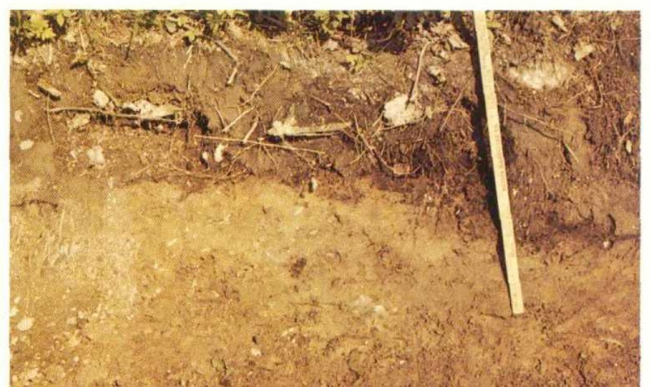
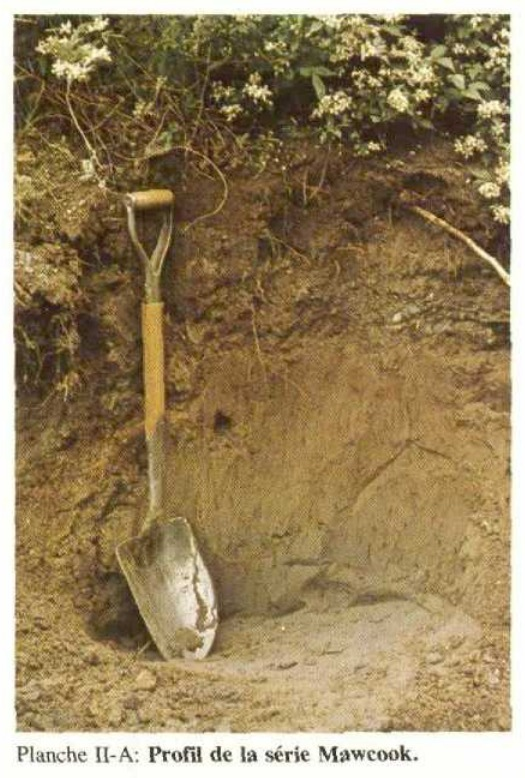
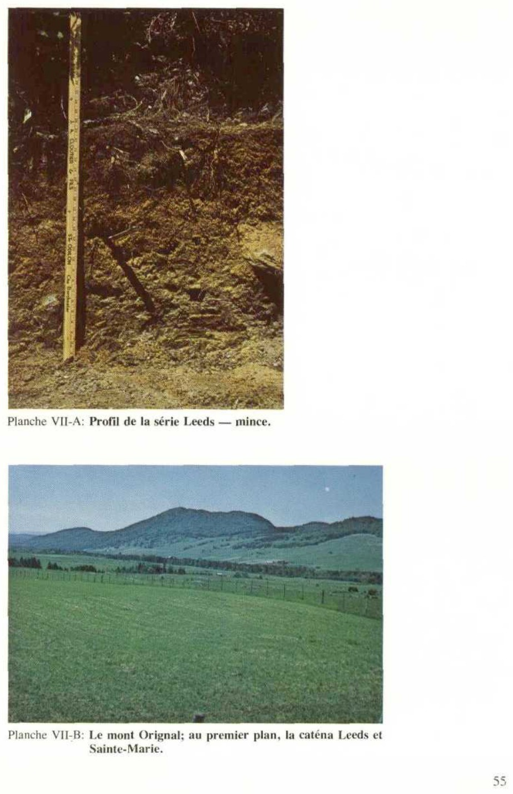

Planche I ............................................................................... 49
A) Profil de la série Dessaint.
B) Topographie de la catena Rivière-du-Loup et Dessaint, près de Sainte-Claire.
Planche II .............................................................................. 50
A) Profil de la série Mawcook.
B) Topographie de la série Saint-André à Saint-Anselme.
Planche III ............................................................................. 51
A) Profil de la série Beaurivage.
B) Topographie du complexe Beaurivage et Saint-Thomas à Saint-Bernard.
Planche IV ............................................................................ 52
A) Profil de la série Neubois.
B) Topographie de la catena Neubois et Le Bras à Saint-Isidore.
Planche V .................................................................................... 53
A) Profil de la série Calder.
B) Vallée de la rivière Etchemin à Saint-Léon-de-Standon; à l'arrière
dépôts du complexe Saint-Bruno et Calder.
Planche VI ................................................................................... 54
A) Profil de la série Saint-Thomas
B) Profil de la série Rivière-du-Loup.
Planche VII .................................................................................. 55
A) Profil de la série Leeds — mince.
B) Le mont Orignal; au premier plan, la caténa Leeds et Sainte-Marie.
Planche VIII .................................................................................. 56
A) Topographie du complexe Chapais-Painchaud-Saint-Bruno à Saint-Malachie.
B) Topographie du complexe Chapais et Chapais-mince, à Saint-Luc.
Planche IX .................................................................................. 57
A) Érablière sur le complexe Chapais et Chapais-mince à
Saint-Léon-de-Standon.
B) Sol pierreux sur la caténa Leeds et Sainte-Marie à Frampton.
Planche X ................................................................................... 58
A) Topographie du complexe Saint-Onésime et Saint-Onésime-mince à
Sainte-Marguerite.
B) Déboisement illogique sur un sol rocailleux du Saint-Onésime-mince à
Saint-Malachie.
AVANT-PROPOS
L'auteur tient à remercier les confrères pédologues qui par leurs commentaires et leurs conseils judicieux ont été des plus efficaces dans la présentation et la réalisation de ce rapport.
Il veut souligner la collaboration des techniciens analystes ainsi que ceux qui ont exécuté le montage et la confection des cartes pédologiques.
À tous ces coopérateurs ainsi qu'à ceux qui de près ou de loin se sont rendus utiles ou ont contribué de quelque façon que ce soit à l'accomplissement et à la publication de cette étude pédologique, un cordial merci.
PREMIÈRE PARTIE*
LE MILIEU NATUREL
CHAPITRE PREMIER
DESCRIPTION GÉNÉRALE DU COMTÉ DE DORCHESTER
1. Situation et étendue
Le territoire à l'étude, situé sur la rive sud du fleuve Saint-Laurent, en face de l'Île d'Orléans, côtoie à l'est, à l'ouest et au sud, les comtés de Bellechasse, Beauce et Lévis respectivement. Il est inscrit entre les latitudes nord $46.41 - 46.2$ et les longitudes ouest $71.12 - 70.10$. Sa superficie est de 580,041 acres.
2. Démographie
La population totale du comté de Dorchester se chiffrait à 32,475 en 1971. Pour sa part, la population rurale agricole (9,615), ne représente que 29% du total et celle classifiée comme urbaine (7,410), 22%. Il résulte que la presque moitié de l'effectif humain (47%) entre dans la catégorie rurale non agricole et se concentre principalement dans les villages du comté au nombre d'une vingtaine.
Données démographiques de Dorchester
Année
Population totale
Population urbaine
Population rurale
Nbre de fermes
Sup. occ. par les fermes
agricole
non agric.
1966
27,007
6,662
14,683
5,662
2,285
316,660
1971
32,475
7,410
9,615
15,450
1,752
269,143
Recensement du Canada, 1966 et 1971.
Malgré la diminution du nombre de fermes et le fort accroissement de la population rurale non agricole, l'agriculture dans Dorchester reste un secteur d'activité important, à la source de plusieurs emplois secondaires et créateur de paysages relativement stables. Celle des basses terres, en voie de transformation rapide, se distingue de celle du plateau, plus marquée par la tradition et les limitations physiques du milieu naturel. Les autres activités fixant la population dans les villages sont d'abord reliées aux services de base de toute agglomération, plus ou moins développés, en fonction notamment de sa situation par rapport aux principales artères de communication et aux autres petites industries traditionnelles d'une zone de transition entre la plaine cultivée et la forêt.
* Luc Ouellet, B.A., L. ès L., M.A., géographe, Division des Sols, Service de la Recherche et de l'Enseignement, MAQ, Québec.
3. Systèmes de communication
Dans Dorchester, les voies de communications reliant le territoire à l'extérieur longent habituellement les principaux cours d'eau, nommément, l'Etchemin, la Chaudière et un de ses affluents, la rivière Famine. Le sud et le nord sont desservis en voies ferrées mais non le centre. Sur le plateau au sud du lac Etchemin, le Québec Central emprunte la vallée de la Famine, reliant ainsi la Beaucé à Bellechasse. La même ligne passe aussi dans le nord par Saint-Maxime où elle bifurque d'une part vers Saint-Lambert et via Sainte-Hénédine — Saint-Anselme — en direction de Lévis. Venant de Charny, le Canadien National suit un moment la vallée inférieure de l'Etchemin, de Saint-Anselme à Saint-Malachie, avant de tourner à l'est du côté d'Armagh. Les routes principales de Dorchester relient également la rive sud à l'intérieur du plateau appalachien, route 53 et à l'est des États-Unis, route 1 en suivant la vallée de l'Etchemin et de la Chaudière respectivement. La disposition du quadrillage des routes secondaires et des chemins de rang généralement d'orientation nord-ouest-sud-est, s'avère par ailleurs assez uniforme en terrain agricole. Dans les étendues mal drainées ou accidentées, le réseau devient lorsqu'il existe, ténu (chemins forestiers), lâche et irrégulier. Quant à un service aérien régulier, il n'en existe pas actuellement. À cet égard, Dorchester fait encore partie de l'hinterland aéroportuaire de Sainte-Foy.
CHAPITRE DEUXIÈME
LE MILIEU PHYSIQUE
1. Géologie
Le comté de Dorchester se trouve en grande partie inscrit dans le Plateau Appalachien qu'il traverse perpendiculairement à l'orientation locale des couches géologiques. Les formations, à l'exception des saillies volcaniques, mineures par rapport à l'ensemble, sont constituées de couches sédimentaires relativement parallèles qui traversent le comté selon la diagonale nord-est-sud-ouest. Les grès et les schistes ardoisiers qui forment l'essentiel de ces dépôts consolidés, présentent généralement assez peu de métamorphisme. On retrouve cependant dans l'axe de l'anticlinorium à Sutton, prolongation des montagnes vertes du Vermont, un métamorphisme plus accentué qui affecte principalement une partie du groupe de Caldwell appelée schistes de Bennett et le groupe Rosaire au sud. Le tableau suivant mentionne les principales formations.
Tableau des formations consolidées
DÉVONIEN
Série Famine
Calcaires arénacés et argilacés, quartzite et conglomérat
Série Cranbourne
Calcaires arénacés et argilacés, purs et quartzites
Groupe Saint-Juste
Grès impurs, ardoises de couleur foncée
ORDOVICIEN
Groupe de Beauceville
Ardoises noires et grises, quartzites impurs, laves et tufs
Groupe de Rosaire
Quartzites blancs et gris, siltstones gris; schistes ardoisiers noirs et gris; calcaires gris
Groupe de Caldwell
Grès impurs verts, rouges et gris; siltstones et schistes ardoisiers verts, rouges et gris; quartzites blancs; roches volcaniques basiques
Groupe d'Armagh
Grès impurs verts, rouges et gris, siltstones et schistes ardoisiers verts, rouges et gris; quartzites blancs
D'après Béland (1) et Tolman (2).
En bref, les trois formations pré-ordoviciennes mentionnées dans le tableau se partagent la géologie du territoire de Dorchester. Le groupe de Rosaire en constitue le centre et les deux autres formations, qui sont comparables, viennent de part et d'autre. Au nord, il s'agit du groupe de Caldwell auquel se superposent la formation ordovicienne de Beauceville et de trois autres, d'âge dévonien: le groupe de Saint-Juste et les séries Cranbourne et Famine. Ces deux dernières, d'importance plutôt locale, surmontent en discordance structurale les plus anciennes formations déjà plissées et disloquées. Enfin, le territoire au sud du groupe de Rosaire est occupé par la formation d'Armagh.
En raison de la situation du comté et de la disposition du «pattern» topographique, le climat de Dorchester, de type continental à hiver froid et été chaud, ne présente pas grande variation des basses terres au plateau situé plus au sud comme le montre le tableau apparaissant à l'item «climatologie».
2. Topographie
Le plateau appalachien, occupé par la vallée de l'Etchemin et la section de basses-terres Chaudière-Etchemin au nord constituent les traits topographiques principaux du comté.
Le contact entre les basses-terres aux terrasses bien étalées et le plateau légèrement incliné vers le nord-ouest et dont l'altitude varie de 800 à 2,800 pieds se fait graduellement, de coteaux en collines. De Sainte-Marguerite à Saint-Malachie, des collines déjà plus importantes apparaissent de chaque côté de la vallée de l'Etchemin et de son affluent local, la rivière Desbarats. Il s'agit d'un paysage aux formes arrondies ou s'apparentent habituellement en amplitude les lignes convexes des sommets et concaves des dépressions. L'orientation familière des alignements (N-E-S-O), séparés de vallées longitudinales, se trouve illustrée avec plus de netteté par deux crêtes topographiques grossièrement parallèles. La première, d'altitude plus modeste que la seconde — approximativement 2,000 pieds — passe par Saint-Nazaire de Buckland en direction de Vallée Jonction. De cette dorsale primitive, l'érosion s'est attardée à la tronçonner transversalement et à la sculpter en mamelons. Le massif résiduel volcanique de la montagne à l'Orignal, aux sommets plus aigus, domine tout le comté et atteint la cote de 2,800 pieds. C'est le prolongement de ce que Blanchard appelle la crête de Saint-Philémon (Bellechasse).
On retrouve plus au nord entre la montagne à l'Orignal et la rivière Famine, un relief moins tourmenté fait de buttes et collines aux pentes longues qui entoure une étendue en forme de bassin où le lac Etchemin se décharge dans la rivière du même nom.
Enfin, le versant sud de la rivière transversale Famine constitue une section de plateau à grande horizontalité adossée à la frontière du Maine et aux côteaux abritant les lacs de Sainte-Aurélie. Ces lacs, qu'on retrouve en famille à proximité de la limite nord du comté, mais également dans la région du lac Etchemin, se situent de façon caractéristique au pied sud-est des collines. Selon Blanchard, le creusement de ces petits bassins de réception serait le travail d'un glacier gêné un moment dans sa progression vers le nord-ouest.
La vallée de l'Etchemin emprunte d'ailleurs une direction générale assez identique, mais en coupant laborieusement les crêtes résiduelles, non sans quelques compromis qui l'obligent à suivre sur une certaine distance les orientations tectoniques. Une fois sortie de ces passages difficiles, elle présente un profil nettement plus évasé, trahissant, à partir de ce phénomène d'érosion différentielle, un transfert de dépôts meubles plus important des versants à la vallée.
3. Dépôts superficiels
Dans le plateau appalachien et le piedmont, ce sont les matériaux morainiques et fluvio-glaciaires à texture généralement plus grossière que ceux de la plaine, qui constituent les principaux dépôts superficiels du comté. La forme la plus commune d'accumulation glaciaire observée est la moraine de fond qui recouvre la plus grande partie du territoire, déchirée ici et là par des « caps » de roche en place telle la montagne à l'Orignal, ou masquée au fond des lacs et des marécages. Dans le piedmont cependant, les affleurements sont
plus rares avec l'amenuisement du relief. En général, la moraine de fond provient de la roche en place sous-jacente, mais il peut en être autrement, suivant la topographie locale lors de la déglaciation, la disposition des couches géologiques et la direction préférentielle des mouvements du glacier. Parmi les roches les plus communes formant le till constitutif de la moraine de fond locale, citons les schistes, les grès et les quartzites. Ce qu'on appelle « till » est un matériau hétérogène où se partagent dans des proportions variables, sables, limons et argiles auxquels s'entremêlent des roches et cailloux anguleux de dimensions diverses.
À cette moraine de fond qui recouvre le socle des Appalaches, s'ajoute et se superpose tout un maquillage secondaire de formes fluvio-glaciaires et de retouches mineures du relief, par suite de l'action de l'érosion normale pendant un certain temps. Au chapitre des formes fluvio-glaciaires quaternaires, persiste tout un héritage de terrasses visibles de place en place, constituées de graviers et de sables fluvio-glaciaires stratifiés qui occupent habituellement les versants des vallées principales. Quelques eskers sont également identifiables, tel celui situé à proximité de Sainte-Hénédine, d'orientation grossièrement parallèle à la Chaudière. D'autre part, deux alignements morainiques ont été décrits par Gadd (8); la première moraine se situe sur le plateau appalachien à une altitude de 1,100 à 1,200 pieds dans une ligne imaginaire approximative allant de Saint-Philémon (Bellechasse) à Sainte-Marie (Beauce). La deuxième moraine, en partie remaniée par l'action des vagues, passe plus au nord, à une altitude variant de 500 à 600 pieds. Si l'on excepte les sols formés sur place à partir de la moraine de fond, les formes d'accumulation récentes comprendraient surtout des dépôts de gravité et de transport: talus d'éboulis, alluvions diverses provenant de l'érosion hydrique, etc. Les cours d'eau du Québec, à régime saisonnier bien caractérisé, et le relief, parfois marqué, contribuent à cet égard à déterminer un contexte naturel favorable. Les oscillations du niveau des rivières qui en résultent sont à l'origine de bien des terrasses récentes, identifiables aussi bien sur le plateau (ex. environ de Saint-Léon de Standon) que dans le piedmont.
Dans la plaine comme dans le plateau, le bassin immédiat des rivières renferme des limons et des argiles en proportions variables; par ailleurs, des matériaux superficiels sableux et également graveleux dominent largement. Quant aux dépôts argileux de la mer Champlain, il n'est pas rare en raison de la proximité du piedmont et de la situation d'interfluve de cette partie de comté par rapport aux rivières Etchemin et Chaudière, de les voir recouverts par des apports sableux ou graveleux.
4. Hydrographie
Le comté chevauche à peu près également en superficie deux bassins hydrographiques principaux — celui de la Chaudière et, de l'Etchemin — assez rapprochés l'un de l'autre et d'orientation sensiblement parallèle qui se rattachent au système fluvial de la vallée du Saint-Laurent. Au sud-est du comté, une portion de territoire fait partie d'un troisième bassin — celui de la rivière Saint-Jean — orienté vers le nord-est. Dorchester possède à première vue un équipement de drainage bien développé et généralement adéquat, par suite de la nature des formations géologiques et des dépôts meubles aussi bien que du relief ondulé du plateau appalachien. Localement toutefois, dans le nord du comté notamment, une topographie moins affirmée contribue à la permanence de superficies mal drainées.
Au sud du Lac Etchemin, la rivière Famine et ses affluents drainent le territoire jusqu'au bassin de la Saint-Jean au sud-est et les rivières Metgermette nord, centrale et sud se rattachent au bassin de la Chaudière tout comme le coin nord-ouest du comté.
Au nord de la Vallée de la Famine commence le bassin de l'Etchemin enraciné dans le creux des collines qui se décharge au nord-ouest dans le fleuve Saint-Laurent. Fait à noter, l'allure du réseau hydrographique change de façon appréciable du plateau aux basses terres de Saint-Isidore. Sur le plateau en effet, les affluents d'importance — et le cours supérieur de l'Etchemin lui-même — ont tendance à adopter de manière préférentielle les directions tectoniques pour couler parallèlement les uns aux autres jusqu'à rencontrer à angle droit les cours d'eau originels transversaux aux plis, telles les rivières Etchemin ou Chaudière. Par suite de ces servitudes physiques, un réseau non plus tellement dendritique mais plutôt à mailles allongées, lié au développement des cours d'eau subséquents, tend à se former. Dans la partie de comté occupée par les basses terres cependant, l'aspect du chevelu hydrographique devient nettement plus dendritique à cause d'une certaine uniformité de la texture des dépôts meubles. Quant à la rivière Famine d'orientation « tectonique » qui coule parallèlement aux plis appalachiens, elle se révèle en conséquence quelque peu différente dans le mode d'organisation du réseau. Plusieurs de ses affluents possèdent encore, il est vrai, l'orientation « appalachienne » déjà mentionnée pour ceux de l'Etchemin; c'est le cas notamment dans les étendues mal drainées du plateau où le relief est plus doux. Mais à proximité de la rivière Famine elle-même, l'influence d'un niveau de base d'une altitude inférieure aux terres environnantes de quelques centaines de pieds l'emporte sur la tectonique, au point où les affluents (d'orientation N.O.-S.E.) vont rencontrer la rivière à angle droit. Ici comme ailleurs dans le comté, cependant, il est remarquable de constater qu'un grand nombre de cours d'eau alimentant des rivières plus importantes prennent leur source dans quelque petit lac — vestige d'un passé glaciaire — au pied sud-est d'une de ces nombreuses collines qui viennent briser l'horizontalité du plateau. Finalement, l'allure des rivières subséquentes et toutes les autres caractéristiques déjà mentionnées se révèlent assez typiques dans le contexte appalachien et les mêmes traits généraux, à peu de chose près, pourraient tout aussi bien se retrouver dans les comtés de Beauce ou de Bellechasse.
5. Climatologie
Selon les données météorologiques du tableau suivant, la température annuelle varie de 38.7° F dans la partie nord du comté à 36.9° F dans la partie sud.
Station**
Altitude en pieds
Température annuelle (3)
Juillet
Janvier
Précipitation (3)
moy. ann.
mai-sept
Armagh
1,150
38.7° F
64.4° F
10.4° F
40.7 po
19.0 po
Scott
475
38.7
65.5
9.6
38.2
19.3
St-Éphrem
1,075
38.7
64.7
10.6
39.8
18.9
Ste-Germaine
1,350
36.9
62.3
8.8
38.4
19.5
** Les données des stations d'Armagh, de Scott et de Saint-Éphrem couvrent la période de 1941-1970, celles de Sainte-Germaine vont de 1963 à 1970.
Seule la station de Sainte-Germaine, située à 1,350 pieds d'altitude, accuse une température légèrement plus basse. Pour l'ensemble du territoire, la période sans gel varie annuellement entre 115 et 125 jours. D'autre part, la saison de végétation — 170 jours environ — qui va habituellement du 25 avril au milieu d'octobre, donnerait de 2,400 à 3,000 degrés-jours de croissance. Ces valeurs, on le sait, tiennent compte des températures moyennes normales et représentent la somme annuelle de degrés-jours au-dessus de 42° F. Pendant cette période capitale pour les activités agricoles, le comté ne souffre pas en général de déficit en eau et la précipitation moyenne atteint 19 pouces. La moyenne annuelle, quant à elle, se situe à 39.2 po. Le sud-est du territoire fait partie de la région climatique 5L et le nord-ouest est inscrit dans la zone 4L. Selon l'échelle des classes d'humidité, cela signifie que l'évapo-transpiration potentielle est généralement inférieure à la précipitation. Ce climat, critique pour certaines cultures spéciales requérant une période minimum de soleil et de chaleur pas toujours atteinte dans le comté, convient par ailleurs bien à l'industrie laitière et à l'élevage.
6. Végétation
Biogéographiquement, le comté de Dorchester fait partie de la forêt mixte Grands-Lacs-Saint-Laurent dont l'association de l'érablière laurentienne (érable à sucre, hêtre, ostryer, tilleul, etc.), représente le climax. Dans le plateau apalachien, c'est sur le versant ouest ou le sommet arrondi des collines plus particulièrement dans la région des deux alignements topographiques déjà mentionnés que l'association climacique est la mieux représentée. Aux sapins plus nombreux, l'érablière à bouleaux jaune illustre un type de transition possible entre l'érablière laurentienne typique et la sapinière. L'érablière à bouleau jaune est notamment présente dans la région de Saint-Bernard et sur le versant nord du prolongement dans Dorchester de la crête de Saint-Philémon. L'érablière laurentienne est habituellement liée aux sols brunisoliques, alors que dans le cas de l'érablière à bouleau jaune, on note généralement une attention plus marquée vers les sols podzoliques. Dans le creux des ondulations, sur les berges de rivières et à travers d'anciennes superficies défrichées, à sols pauvres en bases échangeables et acides, les associations de transition prennent plus d'importance. Citons par exemple, celles du tremble-bouleau-érable rouge, l'épinette-sapin et l'association mixte de transition où cohabitent feuillus et conifères. Il existe aussi quelques associations d'importance plus locale, telles la cèdrière rocheuse ou tourbeuse, la pessière tourbeuse, la laricinière, l'aulnaie, etc.
Au sud de la rivière Famine, un relief plus doux contribue avec la minceur des dépôts meubles à la formation de sites à drainage défectueux. En raison de la relative rareté des collines par rapport à l'autre section du plateau, les érablières se font elles aussi moins nombreuses, bien qu'on en retrouve encore ici et là, notamment dans les régions de Saint-Zacharie, de Sainte-Aurélie et de Sainte-Justine. La sapinière qui s'intercale entre des érablières plus clairsemées donne lieu à des alliances mixtes de peuplements, colonisateurs de sites frais à humides. Sont présents entre autres le sapin, le peuplier faux-tremble, le bouleau blanc, l'érable rouge, etc., sans oublier les peuplements mieux cantonnés spatialement cités plus haut.
Dans la section largement déboisée de la plaine du Saint-Laurent, les érablières ayant résisté au défrichement se situent habituellement au sommet de basses collines à
sols pierreux ou trop minces pour être cultivés de façon profitable. Dans la plaine argileuse, c'est l'orme qui constitue la végétation naturelle. Sur les terrains retournés à la forêt se développent des boisés de succession formés de trembles, d'épinettes blanches, de sapins, de bouleaux blancs, etc. Mais sur les affleurements, en bordure des rivières et dans les dépressions, il est encore commun de rencontrer la cédrière rocheuse (sur substratum calcaire et en peuplement plutôt ouvert) ou tourbeuse et l'aulnaie où se mêlent quelques bouleaux blancs.
Il s'agit en somme d'une forêt mixte ayant comme pôle de stabilité l'érablière laurentienne avec toutes les dégradations anthropiques que l'on sait, venues ainsi brouiller les transitions et variations naturelles multiples résultant de conditions pédologiques, topographiques et climatiques propres à chaque lieu.
DEUXIÈME PARTIE
LES SOLS DU COMTÉ DE DORCHESTER
1 — Taxonomie, nature de la roche mère et état de drainage des sols (7)
A. GLEYSOLS
— Série KAMOURASKA
Matériau originel : sédiments marins argileux et calcaires
Drainage : mauvais
Loam limoneux KAMOURASKA ................................................................ K
— Série SAINTE-ROSALIE
Matériau originel : argile grise non calcaire
Drainage : imparfait
Argile sableuse SAINTE-ROSALIE ........................................................... Rs
— Série LE BRAS
Matériau originel : loam sableux sur loam argileux
Drainage : imparfait
Loam sableux LE BRAS ..................................................................... Bs
— Série BROMPTON
Matériau originel : till glaciaire de loam argileux et pierreux provenant d'ardoises grises et de schistes.
Drainage : mauvais
Loam argileux pierreux BROMPTON ........................................................ Br
— Série FOUQUETTE
Matériau originel : loam limono-argileux surmonté de pierres (blocs) et coiffé de minces lits de sable.
Drainage : mauvais
Loam tourbeux FOUQUETTE .............................................................. F
— Série MAWCOOK
Matériau originel : till de loam sablo-graveleux à pierreux, remanié et provenant de grès acides et/ou calcaires et de schistes brun-rouge (formation de Sillery et du complexe Saint-Germain)
Drainage : mauvais
Loam sableux pierreux MAWCOOK ....................................................... Ma
— Série CHABOT
Matériau originel : till glaciaire loameux et pierreux, issu de schistes ardoisiers gris, verts et bruns. Calcaires gris. Groupe de Rosaire
Drainage : mauvais
Loam pierreux CHABOT ..................................................................... Cha
— Série DU CREUX
Matériau originel: dépôts fluvio-lacustres à texture de
loam sablo-argileux.
Drainage imparfait
Loam DU CREUX .............................................................. C
— Série MONT-CARMEL
Matériau originel: till glaciaire loameux et pierreux brun
à brun foncé, issu de grès, de schistes ardoisiers
gris et bruns, de quartzites et de schistes argileux.
Matériaux acides. Groupe d'Armagh.
Drainage imparfait
Loam pierreux MONT-CARMEL ............................................. Ca
— Série IXWORTH
Matériau originel: till glaciaire à texture de loam sablo-argileux
à loam pierreux, issu de grès, de schistes
ardoisiers gris et bruns, de quartzites et de
schistes argileux. Matériaux acides.
Groupe d'Armagh.
Drainage mauvais à très mauvais
Loam sablo-argileux pierreux IXWORTH .................................... I
— Série LAFONTAINE
Matériau originel: till glaciaire loameux et pierreux issu de
schistes ardoisiers verts, gris et rouges et de
quartzites. Matériaux acides. Groupe de
de Rosaire et de Caldwell.
Drainage mauvais à très mauvais
Loam argileux pierreux LAFONTAINE ..................................... La
B. PODZOLS
1. Podzol orthique
— Série SAINT-THOMAS
Matériau originel: sable fin et très fin sur argile marine.
Drainage bon à excessif
Sable fin SAINT-THOMAS ................................................. Th
— Série SAINTE-SOPHIE
Matériau originel: sable moyen sur argile
Drainage bon à excessif
Sable SAINTE-SOPHIE ................................................... Sp
— Série BEAURIVAGE
Matériau originel: sable moyen à grossier et graveleux
Drainage bon à excessif
Loam sablo-graveleux BEAURIVAGE ........................................ Br
Matériau originel: till glaciaire à texture de loam sableux, pierreux, remanié, issu d'un mélange de grès acides et de schistes brun-rouge (formation de Sillery et du complexe Saint-Germain)
Matériau originel : till glaciaire à texture de loam, pierreux, brun à brun foncé, issu de grès, de schistes ardoisiers gris et bruns, de quartzites et de schistes argileux. Matériaux acides.
Groupe d’Armagh.
Drainage bon à excessif
Loam pierreux SAINT-ONÉSIME ..................................................... O
Matériau originel : till glaciaire à texture de loam, pierreux, gris à gris clair, issu de schistes ardoisiers noirs et gris, souvent calcaires, de microgrès et de quartzites. Groupe de Rosaire.
Matériau originel : till glaciaire à texture de loam, pierreux, brun gris à gris, issu de schistes ardoisiers verts et gris, de microgrès et de quartzites, matériaux acides. Groupe de Rosaire et de Caldwell.
Drainage bon
Loam pierreux ARAGO ............................................................... Ao
Matériau originel : dépôts fluvio-glaciaires à texture de loam graveleux pierreux, issus de quartz, de microgrès, de schistes ardoisiers et de matériaux laurentiens (granite, gneiss).
Drainage bon à excessif
Loam sablo-graveleux SAINT-BRUNO .............................................. B
Matériau originel: sable moyen à grossier, humifère
Drainage mauvais
Sable loameux SAINT-SAMUEL ................................................. Sm
Série FOURCHETTE
Matériau originel: sable moyen à grossier et graveleux
Drainage imparfait
Loam sablo-graveleux FOURCHETTE .............................................. Fc
Série DESSAINT
Matériau originel: till remanié par l'eau à texture de loam sableux et pierreux, issu de grès et de schistes ardoisiers acides, contenant parfois des lentilles d'argile brun-rouge.
Drainage imparfait
Loam pierreux DESSAINT .......................................................... D
Série DES PINS
Matériau originel: till glaciaire à texture de loam sableux, pierreux, remanié, issu d'un mélange de grès acides et de schistes brun-rouge (formation de Sillery et du complexe Saint-Germain).
Drainage imparfait
Loam pierreux DES PINS .......................................................... Pi
Série SAINTE-MARIE
Matériau originel : till glaciaire à texture de loam sableux, issu d'ardoises grises et de schistes.
Drainage imparfait
Loam graveleux SAINTE-MARIE ………………………………………………
Mai
Série PAINCHAUD
Matériau originel : till glaciaire à texture de loam, pierreux, gris à gris-brun clair, issu de schistes ardoisiers noirs et gris souvent calcaires, de microgrès et de quartz. Groupe de Rosaire.
Drainage imparfait
Loam pierreux PAINCHAUD ………………………………………………
Pai
Série GARNEAU
Matériau originel : till glaciaire à texture de loam, pierreux, brun-gris à gris, issu de schistes ardoisiers verts, de microgrès et de quartzites. Matériaux acides. Groupes de Rosaire et de Caldwell.
Drainage imparfait
Loam pierreux GARNEAU ………………………………………………
Ga
C. REGOSOLS
Série LACHUTE
Matériau originel : loam à loam sableux très fin (récent)
Drainage bon
Loam sableux très fin LACHUTE ………………………………………………
Lc
Alluvions non différenciées, de texture très variable ……………………………………
ALL
D. ORGANOSOLS
Terre noire bien décomposée …………………………………………………………………
II — Description morphologique et fiches analytiques
A. GLEYSOLS
Loam limoneux KAMOURASKA (K) 1,315 acres
Le loam limoneux Kamouraska couvre des aires restreintes dans Saint-Isidore et dans Saint-Anselme. Le matériau originel est un loam limono-argileux, calcaire et de couleur grise. Comme il est associé à la série Beaurivage, il renferme parfois des lits de sable à l'intérieur du profil.
Caractères distinctifs du KAMOURASKA
Topographie: horinzontale
Drainage: mauvais
Pierrosité: modérément pierreux — 1*
Grand-groupe génétique: gleysol
Degré d'érosion: nul #
Classes d'utilisation: (C) 2W à 3W** (Q) 2d ##
Association géographique: série Beaurivage
Végétation naturelle: ormes
PROFIL
Horizons
Épaisseur pces/cm***
Description
Ap
0-6/0-15
Loam limoneux gris-brun clair (2.5Y 6/2); structure grossièrement granulaire à finement polyédrique; consistance ferme, friable et perméable; pH: 5.0.
Loam argileux gris-olive (5Y 5/2); structure polyédrique modérément à faiblement développée; mouchetures nombreuses de couleur brun-jaune (10YR 5/6); ferme; pH: 5.8.
Cg
16+/41+
Loam limono-argileux gris (5YR 6/1) avec mouchetures de couleur brun-jaune (10YR 5/6); structure polyédrique faiblement développée; ferme; pH: 6.6.
* Annexe IV
** Annexe VI
*** 1 cm = 0.3937 po. 1 pouce = 2.5189 cm
# Annexe III
## Bibliographie — 6
Fiche analytique
Loam limoneux Kamouraska
Horizons
Profondeur pces/cm
Sable %
Limon %
Argile %
pH
C %
N %
Bases totales
C.E.
Saturation %
Ap
0-8/0-20
30.0
50.4
19.6
5.0
4.40
0.22
5.53
13.53
40.87
Bg
8-16/20-41
34.0
42.4
23.6
5.8
0.25
0.03
6.30
9.30
67.74
Cg
16+/41+
16.0
46.4
37.6
6.6
0.36
0.04
8.91
10.91
81.66
Utilisation agricole
Les sols Kamouraska sont fertiles et conviennent bien à la grande culture. L'amendement du drainage naturel apporte une amélioration dans la structure, qui influence les rendements d'une façon notable.
Argile sableuse SAINTE-ROSALIE (Rs) 686 acres
L'argile sableuse Sainte-Rosalie se rencontre en faibles étendues à Saint-Bernard et à Saint-Anselme. L'horizontalité du terrain et la compacité du sous-sol rendent le drainage difficile. L'argile massive ne permet qu'une percolation interne excessivement lente. La pénétration de la pluie dans ce sol à relief horizontal contribue à atténuer les effets néfastes des périodes de sécheresse prolongées.
Argile sableuse brun-gris très foncé (10YR 3/2), structure granuleuse; friable; pH: 5.5 à 6.0.
Bg
5-10/12-25
Argile gris clair (5Y 6/1) avec mouchetures de couleur brun-jaune foncé 10YR 4/4); structure massive; consistance très plastique; pH: 5.9 — 6.1.
Cg
10+/25+
Argile gris (5Y 5/1) avec mouchetures de couleur brun-jaune (10YR 5/6); structure massive; consistance très plastique et très collante; pH: 6.1 — 6.3.
FICHE ANALYTIQUE
Argile sableuse Sainte-Rosalie
Horizons
Profondeur pces/cm
Sable %
Limon %
Argile %
pH
C %
N %
Bases totales
C.E.
Saturation %
Ap
0-5/0-12
14.0
45.0
41.0
5.5
2.31
0.15
13.30
14.90
89.25
Bg
5-10/12-25
12.0
20.0
68.0
6.0
1.02
0.09
26.99
28.39
96.13
Cg
10+/25+
10.0
32.4
57.6
6.3
0.58
0.04
23.64
24.70
96.00
Utilisation agricole
L'argile sableuse Sainte-Rosalie est un sol fertile et se prête bien à la grande culture. Les améliorations importantes consistent dans le drainage souterrain, l'égouttement de surface et l'application d'engrais phosphatés. Le chaulage améliorera la structure tout en corrigeant l'acidité du sol.
Loam sableux LE BRAS (Bs) 5,436 acres
Le loam sableux Le Bras est localisé en grandes étendues dans Saint-Isidore et en petites étendues dans Saint-Maxime, dans Saint-Anselme et dans Saint-Bernard. À l'instar de son membre caténaire: la série Neubois, le sol Le Bras occupe les berges et les vallées des cours d'eau. Le sous-sol est un loam argileux. Le drainage est imparfait.
Caractères distinctifs du LE BRAS
Topographie: légèrement déprimée
Drainage: imparfait
Pierrosité: nulle — 0
Grand-groupe génétique: gleysol
Degré d'érosion: ravinement superficiel et occasionnel (E1)
Loam sableux à loam légèrement humifère brun-gris foncé (10YR 4/2); friable, sans consistance; pH: 5.7.
Bg
5-12/12-30
Loam sableux olive (2.5Y 4/4) avec mouchetures de couleur brun-jaune (10YR 5/8); structure peu développée; peu friable et peu perméable; pH: 6.4.
Cg
12+/30+
Loam argileux brun-gris (2.5Y 5/2) avec mouchetures de couleur brun-jaune (10YR 5/6); structure massive; compact; pH: 7.7.
FICHE ANALYTIQUE
Loam sableux Le Bras
Horizons
Profondeur pces/cm
Sable %
Limon %
Argile %
pH
C %
N %
Bases totales
C.E.
Saturation %
Ah
0-5/0-12
60.0
33.4
6.6
5.7
5.99
0.33
18.42
27.42
67.17
Bg
5-12/12-30
60.0
26.4
13.6
6.4
0.67
0.04
7.65
9.65
17.79
Cg
12+/30+
40.0
32.0
28.0
7.7
0.33
0.02
12.40
12.40
0.0
Utilisation agricole
Une fois drainés, les sols Le Bras peuvent être considérés parmi les meilleurs du comté pour la grande culture et l'industrie laitière. Toutefois, il faut accorder une attention particulière à l'amélioration de la fertilité et à la prévention de l'érosion.
Loam argileux pierreux BROMPTON (Br) 21,620 acres
Le loam argileux pierreux Brompton est localisé dans les paroisses de Sainte-Germaine, de Saint-Benjamin, de Saint-Odilon, de Sainte-Rose, de Sainte-Marguerite, de Saint-Léon, de Frampton, de Saint-Prosper où il occupe les vallées, les endroits bas et mal drainés. Il est généralement associé aux sols des séries Leeds et Sainte-Marie avec lesquelles il forme une séquence ou caténa de drainage. Le matériau originel est constitué de till de loam à loam sablo-argileux et de coloration grise à olive. La coloration de la surface est brun-gris foncé. Les sols Brompton sont très pierreux et difficiles à mettre en culture. À cause de leur position topographique, au bas des pentes et dans les vallées, ces sols sont presque continuellement saturés d'eau, ce qui explique leur forte teneur naturelle en matière organique.
Les sols Brompton ont de médiocres propriétés physiques, un mauvais drainage et d'abondantes pierres. Ces sols sont impropres à l'agriculture. Seul le reboisement peut y être pratiqué.
Loam tourbeux FOUQUETTE (F) 1,185 acres
Le loam tourbeux Fouquette occupe de moyennes étendues dans Saint-Isidore et de petites étendues dans Sainte-Hénédine, dans Saint-Anselme et dans Sainte-Marguerite. Il tapisse le fond des vallées et se situe à des altitudes de 650 à 750 pieds. Par sa topographie, il est généralement associé aux sols dérivés de till remanié de la série Dessaint. Avec le labour, la surface organique se mélange à l'horizon Aeg de couleur grise. Ce sol repose sur une argile brun-jaune.
Caractères distinctifs du FOUQUETTE
Topographie : horizontale à déprimée
Drainage : mauvais
Loam à loam humifère gris très foncé (10YR 3/1) à noir (2.5YR 2/0); structure granulaire peu développée; friable; pH: 5.6.
Aeg
7-9/17-23
Loam gris clair (10YR 7/2) avec quelques mouchetures de couleur brun pâle (10YR 6/3); structure granulaire; friable; pH: 5.3.
Bg
9-16/23-41
Loam sablo-argileux gris foncé (10YR 4/1) avec de nombreuses mouchetures de couleur brun-jaune foncé (10YR 4/4); structure massive; plastique; pH: 6.0.
Cg
16+/41+
Argile limoneuse jaune-olive (5Y 6/6) avec de nombreuses mouchetures de couleur brun-jaune clair (2.5Y 6/4); structure massive; plastique; pH: 6.9.
Utilisation agricole
Ces sols ont un niveau de fertilité assez bon. Toutefois, ils possèdent un mauvais drainage et des propriétés physiques médiocres. Ils peuvent être améliorés avec l'assainissement du terrain et un apport généreux de pierre à chaux. Ainsi améliorés, ils conviennent à la grande culture.
Loam sableux pierreux MAWCOOK (Ma) 5,373 acres
Le loam sableux pierreux Mawcook se rencontre en grandes étendues dans Saint-Anselme et dans Saint-Bernard; en petites étendues dans Saint-Isidore, dans Saint-Anselme et dans Saint-Bernard. Ce sol provient d'un till remanié dont la texture est un loam sableux pierreux composé de schistes ardoisiers verts, rouges et gris; de grès et de quelques quartzites blancs. Les sols de la série Mawcook, situés dans le bas des pentes et les dépressions, accusent un drainage mauvais.
Caractères distinctifs du MAWCOOK
Topographie: horizontale à déprimée
Drainage: mauvais
Pierrosité: modérément pierreux — 1
Grand-groupe génétique: gleysol
Degré d'érosion: nul
Classes d'utilisation: (C) 3W à 4P (Q) 3d à 3c
Association géographique: séries Dessaint, Rivière-du-Loup
Végétation naturelle: plaines, mélèzes
Loam sableux pierreux gris clair (7.5R 7/0); structure un peu granulaire; ferme.
Bg
8-16/17-41
Loam à loam sableux pierreux gris-brun clair (2.5Y 6/2) avec mouchetures de couleur brun (10YR 5/3); structure légèrement lamellaire; ferme; pH: 5.1.
Cg
16+/41+
Loam sableux pierreux gris (10YR 5/1) avec mouchetures de couleur brun foncé (10YR 4/3); structure lamellaire; compact; pH: 5.0.
FICHE ANALYTIQUE
Loam sableux pierreux Mawcook
Horizons
Profondeur pces/cm
Sable %
Limon %
Argile %
pH
C %
N %
Bases totales
C.E.
Saturation %
Ah + Ae
0-7/0-17
69.6
18.0
12.4
4.7
2.09
0.12
1.3
8.3
15.66
Bg
7-16/17-41
48.6
33.0
18.4
5.1
0.53
0.04
1.65
7.15
23.07
Cg
16+/41+
55.6
30.0
14.4
5.0
0.97
4.2
10.2
41.17
Utilisation agricole
Les sols Mawcook, à cause de leur situation, sont imprégnés d'eau. Cependant, une fois drainés et bien fertilisés, ils conviennent aux pâturages.
Loam pierreux CHABOT (Cha) 6,353 acres
Le loam pierreux Chabot occupe de grandes étendues dans Saint-Luc, dans Saint-Nazaire et dans Saint-Malachie; en moindres étendues dans Sainte-Germaine, dans Saint-Léon et dans Sainte-Justine. Associé aux séries Chapais et Painchaud, il en est le membre caténaire mal drainé. Les sols de la série Chabot occupent le bas des pentes dans des vallées de till glaciaire généralement profond. Le matériau originel de la série Chabot est un till de texture de loam argileux à loam pierreux, issu de quartzites blancs et gris, de microgrès gris; de schistes ardoisiers (phyllades) noirs et gris et de quelques calcaires gris.
Caractères distinctifs du CHABOT
Topographie: horizontale à déprimée
Drainage: mauvais à très mauvais
Pierrosité: très pierreux — 2
Grand-groupe génétique : gleysol
Degré d'érosion : nul
Classes d'utilisation : (C) 4W à 7P (Q) 3d à 6
Association géographique : séries Chapais et Painchaud
Végétation naturelle : mélèzes, cèdres, aulnes
PROFIL
Horizons
Épaisseur pces/cm
Description
L-H
0-8/0-20
Humus noir (10YR 2/1); peu minéralisé; sans structure; friable; pH: 4.4.
Bg1
0-9/0-23
Loam pierreux gris foncé (7.5YR 5/6) avec mouchetures de couleur jaune pâle (2.5YR 8/4); structure massive; plastique; pH: 4.5.
Bg2
9-16/23-41
Loam pierreux gris (7.5YR 5/0) avec mouchetures de couleur jaune (10YR 8/6); structure massive; ferme; pH: 5.2.
Cg
24+/60+
Loam argileux pierreux à loam pierreux gris-olive (5Y 5/2) avec nombreuses mouchetures de couleur brun-jaune clair (2.5Y 6/4); structure massive; plastique; pH: 5.5.
FICHE ANALYTIQUE
Loam pierreux Chabot
Horizons
Profondeur pces/cm
Sable %
Limon %
Argile %
pH
C %
N %
Bases totales
C.E.
Saturation %
L-H
0-8/0-20
—
—
—
4.4
31.80
1.21
17.46
69.46
25.13
Bg1
0-9/0-23
51.6
28.0
20.4
4.5
8.41
0.51
8.45
21.45
39.39
Bg2
9-16/23-41
39.6
36.0
24.4
5.2
0.58
0.05
1.65
2.65
62.26
Cg
24+/60+
35.6
36.0
28.4
5.5
0.36
0.04
3.87
5.87
65.92
Utilisation agricole
Par leur fertilité, les sols de la série Chabot sont considérés comme les meilleurs de la zone appalachienne. Toutefois, comme ils se situent en des positions difficiles d'accès et qu'ils sont mal drainés, l'agriculture y est à peu près impossible.
Loam DU CREUX (C) 2,387 acres
Le loam Du Creux couvre des aires restreintes dans les paroisses de Saint-Isidore, de Saint-Anselme, de Sainte-Hénédine et de Sainte-Claire. Les sols de la série Du Creux sont associés aux sols des séries Rivière-du-Loup et Dessaint. Le matériau originel est constitué de dépôts fluvio-lacustres à texture de loam sablo-argileux. Le loam Du Creux tapisse le fond des vallées situées à des altitudes de 550 pieds environ. La topographie est celle d'une plaine horizontale à légèrement ondulée. Le drainage est imparfait.
Caractères distinctifs du DU CREUX
Topographie : horizontale à faiblement ondulée
Drainage : imparfait
Pierrosité : modérément pierreux — 1
Grand-groupe génétique : gleysol
Degré d'érosion : nul
Classes d'utilisation : (C) 3W (Q) 3d
Association géographique : séries Fouquette, Dessaint et Rivière-du-Loup
Les sols de la série Du Creux conviennent bien à la grande culture et à l'industrie laitière. Il faut toutefois ajouter un généreux apport de pierre à chaux, ce qui favorisera l'amélioration des propriétés physiques, notamment la structure. À cause de leur topographie, ces sols manquent rarement d'eau, ce qui permet de procurer de bons pâturages.
Loam pierreux MONT-CARMEL (Ca) 6,054 acres
Le loam pierreux Mont-Carmel se rencontre en grandes étendues dans Sainte-Claire, dans Saint-Malchie; en moindres étendues dans Sainte-Marguerite et dans Sainte-Hénédine. Dominé par la série Saint-Onésime, il occupe presque toujours les pentes des collines et des élévations. Les sols Mont-Carmel proviennent d'un till glaciaire compact assez dur et très pierreux. Ce till est issu de schistes ardoisiers verts, rouges et gris, de microgrès verts, et grès impurs verts, rouges et gris et quelques quartzites blancs. La présence de ce matériel rend le sol presque imperméable à l'eau et de ce fait, les pentes sont humides et sourceuses. Avec un paysage dominé par un microrelief parsemé de petites élévations, les sols Mont-Carmel forment une association avec les sols encore plus mal drainés et tourbeux de la série Ixworth.
Caractères distinctifs du MONT-CARMEL
Topographie : pente irrégulière, faible à raide
Drainage : imparfait
Pierrosité : excessivement pierreux — 3
Grand-groupe génétique : gleysol
Degré d'érosion : léger (W1)
Classes d'utilisation : (C) 4W à 7P (Q) 3d à 6
Association géographique : Saint-Onésime et Ixworth
Loam pierreux brun-jaune (10YR 5/4) avec mouchetures de couleur jaune-brun (10YR 6/6); structure granulaire; friable; pH: 4.3.
BCg
13-18/33-46
Loam pierreux brun foncé (7.5YR 4/2) avec mouchetures de couleur jaune-brun (10YR 6/6); structure polyédrique; ferme; pH: 4.6.
Cg
18+/46+
Loam pierreux à loam sablo-argileux pierreux gris (10YR 5/1) avec mouchetures de couleur brun (10YR 4/4); structure massive; consistance massive; pH: 5.2.
FICHE ANALYTIQUE
Loam pierreux Mont-Carmel
Horizons
Profondeur pces/cm
Sable %
Limon %
Argile %
$pH$
$C$ %
$N$ %
Bases totales
$C.E.$
Saturation %
Ah
0-4/0-10
54.2
25.4
20.4
3.8
6.82
0.41
2.19
18.19
12.02
Bf
4-7/10-17
39.2
42.4
18.4
4.0
3.76
0.19
0.33
12.33
2.67
Bfg
7-13/17-33
41.2
40.4
18.4
4.3
2.76
0.15
0.33
10.33
3.19
BCg
13-18/33-46
41.2
38.4
20.4
4.6
2.46
0.14
0.30
13.30
2.25
Cg
18+/46+
51.2
28.4
20.4
5.2
0.42
0.08
2.15
4.15
51.80
Utilisation agricole
Les sols Mont-Carmel sont très pierreux et difficiles à drainer. Les sols de cette série qui ont été livrés à la culture, l'ont été au prix d'énormes travaux, par suite de la grande abondance de pierres et également à cause de certaines propriétés physiques du sous-sol, notamment d'un horizon à fragipan.
Le loam sablo-argileux pierreux Ixworth occupe des étendues dans Sainte-Marguerite, dans Sainte-Claire et dans Saint-Nazaire, à la suite du Saint-Onésime et du Mont-Carmel et occupe, comme dernier membre de la caténa, le bas des pentes et les dépressions à mauvais drainage. Le sous-sol est très compact et imperméable, ce qui favorise la formation de minces terres noires; c'est un till glaciaire à texture de loam sablo-argileux à loam, pierreux, issu de schistes ardoisiers verts, rouges et gris, de microgrès verts, de grès impurs rouges, gris et verts et de quelques quartzites blancs.
Caractères distinctifs du IXWORTH
Topographie: horizontale à déprimée
Drainage: mauvais à très mauvais
Pierrosité: excessivement pierreux — 3
Grand-groupe génétique: gleysol
Degré d'érosion: nul
Classes d'utilisation (C): 5W à 7P (Q) 4d à 6
Association géographique: Saint-Onésime et Mont-Carmel
Végétation naturelle: cèdres et aulnes
PROFIL
Horizons
Épaisseur pces/cm
Description
Ah
0-7/0-17
Loam sablo-argileux pierreux brun très foncé (10YR 2/2); très ferme; collant; pH: 5.2.
Bg
7-20/17-51
Loam à loam sablo-argileux pierreux gris très foncé (10YR 3/1) avec mouchetures brun vif (7.5YR 5/8); structure massive; plastique; ph: 5.4.
Cg
20+/51+
Loam sablo-argileux pierreux à loam pierreux gris (5Y 5/1) avec mouchetures de couleur brun pâle (10YR 6/3); structure massive; très compact; pH: 5.5.
FICHE ANALYTIQUE
Loam sablo-argileux pierreux Ixworth
Horizons
Profondeur pces/cm
Sable %
Limon %
Argile %
pH
C %
N %
Bases totales
C.E.
Saturation %
Ah
0-7/0-17
75.6
2.4
22.0
5.2
25.5
0.65
6.60
11.10
59.45
Bg
7-20/17-51
45.6
32.4
22.0
5.4
5.87
0.38
13.52
19.52
69.26
Cg
20+/51+
53.6
26.4
20.0
5.5
0.92
0.07
3.54
5.54
63.93
Utilisation agricole
En général, les sols Ixworth sont restés boisés. Possédant de très mauvaises propriétés physiques en raison notamment de leur position topographique, ils se prêtent très peu à l'agriculture, si ce n'est à l'occasion comme pâturages naturels.
Le loam argileux pierreux Lafontaine couvre des aires importantes dans Saint-Cyprien, dans Sainte-Justine, dans Saint-Prosper, dans Sainte-Rose, dans Sainte-Aurélie, dans Saint-Zacharie et dans Saint-Louis-de-Gonzague. En tant que membre mal drainé de la séquence Arago, Garneau, et Lafontaine, il occupe le bas des pentes et les dépressions, fréquemment associé à de petites terres noires ou organiques. Le matériau originel est un till glaciaire à texture de loam pierreux, issu d'ardoises noires et grises, de quartzites impurs, de grès impurs verts, rouges et gris, et de schistes ardoisiers verts, rouges et noirs.
Humus peu minéralisé brun très foncé (10YR 2/2); structure faiblement granulaire; friable; quelques pierres; pH: 3.8.
Aeg
0-3/0-7
Loam argileux pierreux à loam pierreux gris-brun clair (10YR 6/2) avec mouchetures de couleur brun-jaune clair (2.5Y 6/4); structure massive; plastique; pH: 3.7.
Bg
3-8/7-20
Loam argileux pierreux à argile pierreuse gris-olive (5Y 5/2) avec mouchetures de couleur brun-jaune (10YR 5/4); structure massive; compact; schistes en décomposition; pH: 4.5.
Cg
12+/30+
Loam pierreux à loam argileux pierreux brun-gris foncé (2.5Y 4/2) avec quelques mouchetures brun foncé (10YR 4/3); structure massive; très compact; pH: 5.7.
FICHE ANALYTIQUE
Loam argileux pierreux Lafontaine
Horizons
Profondeur pces/cm
Sable %
Limon %
Argile %
pH
C %
N %
Bases totales
C.E.
Saturation %
L-H
0-4/0-10
—
—
—
3.8
27.07
0.90
13.34
40.34
33.07
Aeg
0-3/0-7
50.2
19.4
30.4
3.7
3.42
0.25
1.83
22.83
8.01
Bg
3-8/7-20
29.2
32.4
38.4
5.3
0.53
0.05
10.16
12.16
83.55
Cg
12+/30+
41.2
32.4
26.4
5.7
0.72
0.05
1.91
3.91
48.84
Utilisation agricole
Quoique pierreux et compacts, les sols de la série Lafontaine sont assez fertiles. Cependant, ils se situent en des endroits impossibles à drainer, ce qui les rend très difficiles à cultiver.
B. PODZOLS
1. Podzol orthique
Sable fin SAINT-THOMAS (Th) 2,105 acres
Le sable fin Saint-Thomas occupe quelques étendues dans Saint-Isidore, dans Saint-Maxime et dans Saint-Bernard. Le matériau originel est un sable fin à sable très fin sur argile marine. Les sols Saint-Thomas sont très perméables et absorbent rapidement l'eau tombée au sol. Cette eau s'infiltre en profondeur et les racines ne peuvent pas toujours l'utiliser. Dans la région de Saint-Isidore, près de la rivière Chaudière, l'érosion éolienne est prononcée à quelques endroits.
Sable fin brun foncé (7.5YR 4/2); sans structure; très friable; très perméable; pH: 4.9 — 5.5.
Ae
traces
Bfh
6-15/15-38
Sable fin brun-rouge foncé (5YR 3/3); sans structure; très friable; très perméable; pH: 5.1 — 5.7.
Bf1
15-20/38-51
Sable fin brun-jaune (10YR 5/6); sans structure; très friable; très perméable; pH: 5.2 — 5.8
Bf2
20-24/51-60
Sable fin jaune-olive (5YR 6/6); sans structure; très friable; très perméable; pH: 5.5 — 6.1.
C
24+/60+
Sable fin jaune pâle (5Y 7/4); sans structure; très friable; très perméable; pH: 5.7 — 6.3.
FICHE ANALYTIQUE
Sable fin Saint-Thomas
Horizons
Profondeur pces/cm
Sable %
Limon %
Argile %
pH
C %
N %
Bases totales
C.E.
Saturation %
Ap
0-6/0-15
88.6
7.2
4.2
4.9
0.58
0.03
1.1
3.51
31.62
Bfh
6-15/15-38
95.6
1.2
1.2
5.1
0.19
0.01
0.61
2.11
28.9
Bf1
15-20/38-51
89.6
6.2
6.2
5.2
0.05
0.01
0.61
1.81
33.70
Bf2
20-24/51-60
88.6
8.2
8.2
5.5
0.17
0.0
0.31
1.01
30.69
C
24+/+60+
86.0
10.0
4.0
5.7
0.10
0.01
0.57
1.91
29.75
Utilisation agricole
Les sols Saint-Thomas conviennent peu à la culture extensive; cependant, ils s'adaptent bien à des cultures spéciales. Sous certaines réserves, la mise en exploitation de ces sols implique des travaux d'irrigation, d'enfouissement d'engrais verts, et, l'usage de fumures organiques et chimiques.
Sable SAINTE-SOPHIE (Sp) 14 acres
Le sable Sainte-Sophie ne représente qu'une moyenne superficie dans Saint-Maxime. Le matériau originel est un sable moyen sur argile. Le sable est constitué de quartz et autres matériaux laurentiens.
Caractères distinctifs du SAINTE-SOPHIE
Topographie: ondulée
Drainage: bon à excessif
Pierrosité: nulle — 0
Grand-groupe génétique: podzol
Degré d'érosion: nul
Classes d'utilisation: (C) 4F (Q) 3b
Association géographique: Saint-Thomas, Achigan
Végétation naturelle: sapins, bouleaux, épinettes
PROFIL
Horizons
Épaisseur pces/cm
Description
Ap
0-7/0-17
Sable brun-rouge foncé (5YR 3/2); sans structure; ouvert; pH: 4.3.
Ae
7-11/17-28
Loam sableux à sable loameux gris (5YR 5/1); sans structure; très friable; pH: 4.7.
Bfh
11-15/28-38
Sable loameux à loam sableux brun foncé (7.5YR 3/2); sans structure; légèrement ferme; pH: 4.7.
Bf
15-24/38-60
Sable loameux à sable brun-jaune clair (2.5Y 6/4); sans structure; friable; pH: 5.1.
C
24+/60+
Sable à sable loameux jaune-brun (10YR 6/6) à jaune-olive (2.5Y 6/6); sans structure; perméable; pH: 5.4.
FICHE ANALYTIQUE
Sable Sainte-Sophie
Horizons
Profondeur pces/cm
Sable %
Limon %
Argile %
pH
C %
N %
Bases totales
C.E.
Saturation %
Ap
0-7/0-17
93.0
3.0
4.0
4.3
4.04
0.18
1.77
8.77
20.18
Ae
7-11/17-28
69.8
20.2
10.0
4.7
1.28
0.07
1.26
6.26
71.20
Bfh
11-15/28-38
79.8
11.2
9.0
4.7
3.92
0.13
0.47
10.47
4.48
Bf
15-24/38-60
85.8
6.2
8.0
5.1
1.25
0.07
0.31
3.31
9.36
C
24+/60+
89.8
3.2
7.0
5.4
0.39
0.03
0.16
1.16
13.79
Utilisation agricole
À l'état naturel, le sable Sainte-Sophie est acide et peu fertile. Avec un bon chaulage, l'apport de fumier et d'engrais chimiques, la fertilité sera augmentée. C'est un sol qui convient bien aux cultures maraîchères, surtout si l'irrigation y est pratiquée.
Le loam sablo-graveleux Beaurivage occupe des aires importantes dans Saint-Anselme, dans Saint-Isidore, dans Saint-Bernard; de faibles étendues dans Saint-Maxime, dans Sainte-Hénédine et dans Sainte-Claire. Ce sol s'est formé aux dépens de sables d'épaisseur et de grosseur variables, sur gravier arrondi et grossier. Les matériaux sont constitués de grès, de quartz, d'ardoises et de schistes. Ce sol se limite généralement aux abords des rivières Etchemin et Chaudière. La topographie est celle de plaines de délavage et de terrasses légèrement ondulées qui ont été fortement entaillées par l'érosion. À cause de leur faible pouvoir de rétention d'eau, ces sols sont sujets à la sécheresse.
Sable grossier brun-gris très foncé (10YR 3/2); sans structure; ouvert; pH: 5.3 — 5.5.
Ae
traces ou en poches.
Bfh
9-13/23-33
Sable grossier brun-rouge (2.5YR 4/4) à brun-rouge foncé (5YR 3/4); sans structure; ouvert; pH: 5.5 — 5.8.
Bf
13-17/33-43
Sable graveleux brun-jaune (10YR 5/6) à brun foncé (7.5YR 4/4); sans structure; ouvert; avec grès, schistes et ardoises; pH: 5.6 — 5.9.
C
17+/43+
Sable graveleux brun-jaune (10YR 5/4) à brun-jaune clair (2.5Y 6/4); sans structure; ouvert à légèrement ferme; avec grès, schistes et ardoises; pH: 5.7 — 6.0.
FICHE ANALYTIQUE
Loam sablo-graveleux BEAURIVAGE
Horizons
Profondeur pces/cm
Sable %
Limon %
Argile %
pH
C %
N %
Bases totales
C.E.
Saturation %
Ap
0-9/0-23
86.0
9.0
5.0
5.5
3.31
0.21
7.96
11.06
71.97
Bfh
9-13/23-33
89.0
7.0
4.0
5.8
2.17
0.12
2.49
8.29
30.03
Bf
13-17/33-43
92.6
5.2
2.2
5.9
0.53
0.02
0.41
1.81
22.65
C
17+/43+
96.6
1.2
2.2
6.0
5.43
0.04
0.28
1.58
17.73
Utilisation agricole
Les sols Beaurivage ont un faible niveau de fertilité. Pour les rendre productifs, des additions généreuses de fumier et d'engrais chimiques s'imposent. Pour favoriser une meilleure rétention de l'eau dans ces sols, il y a lieu de procéder à l'enfouissement d'engrais verts. Ces sols conviennent à la culture de la pomme de terre.
Série Beaurivage, phase mince (650 acres)
À plusieurs endroits, notamment dans Saint-Isidore, il y a des sols graveleux de la série Beaurivage qui reposent sur un substratum argileux à une profondeur relative faible. Ils ont les mêmes exigences que les sols Beaurivage.
Série Beaurivage, phase graveleuse (1,160 acres)
Les sols Beaurivage, phase graveleuse, se rencontrent dans Saint-Isidore et dans Saint-Anselme. La forte proportion de gravier dans les horizons supérieurs marquent une notable différence avec les sols grossiers de la série Beaurivage. Ils ont les mêmes exigences que les sols Beaurivage.
Série Beaurivage, phase rocheuse (397 acres)
Ces sols se situent dans Saint-Anselme et dans Saint-Bernard. Les grosses roches que l'on trouve dans ce genre de sols créent un problème pour la culture mécanisée. Ils ont également les mêmes exigences que les sols Beaurivage.
Loam graveleux SAINT-ANDRÉ (A) 1,717 acres
Le loam graveleux Saint-André couvre des étendues assez importantes dans Saint-Anselme. Cette série occupe les terrasses ou gradins de plage laissés par la mer Champlain, lors de son retrait. Le matériau originel est un sable très graveleux issu de schistes ardoisiers, de schistes argileux, de quartzite dont la coloration varie du gris au vert et au brun-rouge. La texture ouverte de ces sols donne un drainage bon à excessif, occasionnant le dessèchement surtout en période de faibles précipitations.
Caractères distinctifs du SAINT-ANDRÉ
Topographie: légèrement ondulée à vallonnée
Drainage: bon à excessif
Pierrosité: modérément pierreux — 1
Grand-groupe génétique: podzol
Degré d'érosion: nul
Classes d'utilisation: (C) 3S (Q) 3b
Association géographique: Saint-André, phase schisteuse et Mawcook
Végétation naturelle: érables à sucre, hêtres, bouleaux, plaines
Loam graveleux brun foncé (7.5YR 4/4); présence de fragments de grès et de schistes de Sillery; structure finement granulaire; ouvert; pH: 4.8.
Bf2
9-19/23-48
Loam graveleux à loam sablo-graveleux brun-rouge (5YR 5/4), contenant beaucoup de fragments de grès et de schistes; structure grossièrement granulaire; ouvert; pH: 5.3.
C
19+/48+
Loam sablo-graveleux à sable graveleux brun-jaune (10YR 5/4), constitué de grès et de schistes de Sillery; très perméable; pH: 5.6.
FICHE ANALYTIQUE
Loam graveleux Saint-André
Horizons
Profondeur pces/cm
Sable %
Limon %
Argile %
pH
C %
N %
Bases totales
C.E.
Saturation %
Ap
0-5/0-12
51.2
30.0
18.8
4.2
5.48
0.40
6.08
17.08
35.59
Bf1
5-9/12-23
43.2
34.0
22.8
4.8
3.26
0.20
2.51
10.51
59.23
Bf2
9-19/23-48
51.2
32.0
16.8
5.3
2.87
0.19
3.12
9.12
34.21
C
19+/48+
55.0
30.0
15.0
5.6
1.95
0.11
6.59
10.59
62.22
Utilisation agricole
La fertilité est faible dans les sols Saint-André; ils conviennent surtout à la grande culture et à l'industrie laitière. Toutefois, avec l'addition de pierre à chaux, d'engrais chimique et de fumier, la croissance des plantes sera favorisée.
Série Saint-André, phase mince (A-m) 905 acres
Le loam graveleux Saint-André, phase mince, occupe des superficies plus ou moins grande dans Saint-Anselme. Le roc constituant le sous-sol se situe à moins de 2 pieds. Ce sol devrait être laissé en forêt. La culture se trouve en général handicapée par le peu de sol et la grande susceptibilité de celui-ci à la sécheresse.
Série Saint-André, phase sableuse (A-s) 86 acres
Cette phase sableuse est le plus souvent associée au loam graveleux Saint-André. Elle diffère de cette dernière par l'abondance de sable en surface. Ces sols se rencontrent dans Saint-Anselme sur les versants de la montagne du rang Saint-Mathieu. Les exigences culturales sont les mêmes que celles du loam graveleux Saint-André.
Loam schisteux Saint-Nicolas (Ns), 1,222 acres
Le loam schisteux Saint-Nicolas couvre des aires de faibles étendues dans Saint-Anselme, dans Saint-Isidore, dans Saint-Maxime et dans Sainte-Claire. Ce sol résiduel repose généralement sur une roche-mère schisteuse et gréseuse de coloration brun-rouge, cette couleur le différencie du Saint-André. Avec ses éperons de roc qui affleurent, il est habituellement bien caractérisé dans le paysage. La série contient d'ailleurs en surface une certaine proportion de schistes de Sillery plus ou moins altérés.
Caractères distinctifs du SAINT-NICOLAS
Topographie : légèrement à fortement ondulée
Drainage : bon à excessif
Pierrosité : nulle — 0
Grand-groupe génétique : podzol
Degré d'érosion : nul
Classes d'utilisation : (C) 3F (Q) 3b
Association géographique : Beaurivage, Mawcook
Végétation naturelle : érables à sucre, hêtres, merisiers, coudriers
Loam sableux schisteux brun-rouge (5YR 5/3), avec fragments anguleux et plats (schistes rouges de Sillery); structure finement granulaire; friable; pH: 4.5.
Bf
12-19/30-48
Loam schisteux rouge pâle (2.5YR 6/2); nombreux fragments anguleux et plats (schistes rouges de Sillery); structure en miettes; friable; pH: 4.9.
C
19+/48+
Sable grossier très schisteux rouge faible (2.5YR 5/2); contient une forte proportion de fragments anguleux et plats (schistes rouges de Sillery); sans structure; très perméable; pH: 5.3.
FICHE ANALYTIQUE
Loam schisteux Saint-Nicolas
Horizons
Profondeur pces/cm
Sable %
Limon %
Argile %
pH
C %
N %
Bases totales
C.E.
Saturation %
Ap
0-3/0-7
51.2
28.4
20.4
4.2
9.44
0.43
5.24
16.84
31.11
Bfh
3-12/7-30
65.6
23.2
11.2
4.5
5.07
0.19
0.93
16.93
5.49
Bf
12-19/30-48
68.3
22.5
9.2
4.9
0.60
0.03
1.78
6.08
26.13
C
19+/48+
82.5
10.3
7.2
5.3
0.20
0.02
2.68
5.68
35.03
Utilisation agricole
La majeure partie de ce type de sol est consacrée à des cultures spéciales, telles celles de la pomme de terre et du fraisier. Il possède généralement un bon pouvoir de rétention et répond bien aux fertilisants et à un apport de matière organique. L'irrigation est toutefois à conseiller là où les cultures spéciales se font sur de grandes étendues.
Série Saint-Nicolas, phase mince (Ns-m) 504 acres
Le loam schisteux Saint-Nicolas, phase mince, est localisé à Saint-Isidore et à Saint-Anselme. Ce sol a caractère résiduel est issu d'une roche-mère constituée de schistes aux arêtes aiguës et tranchantes, visibles et occasionnellement sous forme d'affleurements. La valeur agricole de ce type de sol se trouve diminuée par rapport à l'autre type de série Saint-Nicolas. Certaines cultures hâtives restent possibles avec la pratique de l'irrigation pour des profondeurs valables de matériaux meubles.
Le loam sablo-graveleux Rivière-du-Loup occupe des aires importantes dans Saint-Isidore, dans Sainte-Hénédine, dans Saint-Anselme, dans Sainte-Claire, et dans Sainte-Marguerite; de petites étendues dans Saint-Malachie, dans Saint-Bernard et dans Saint-Maxime. Le matériau originel est un till remanié par l'eau à texture de loam sablo-graveleux à sable graveleux, issu de grès et de schistes ardoisiers acides. Ce sol occupe des élévations en forme de bandes plutôt étroites et généralement parallèles au fleuve Saint-Laurent. Il fait partie de la caténa Dessaint et Mawcook.
Caractères distinctifs du RIVIÈRE-DU-LOUP
Topographie: faiblement à fortement vallonnée
Drainage: bon
Pierrosité: modérément pierreux — 1
Grand-groupe génétique: podzol
Degré d'érosion: nul
Classes d'utilisations: (C) 4S à 7P (Q) 4b à 6
Association géographique: Dessaint, Mawcook
Végétation naturelle: érables à sucre, épinettes, peupliers faux-trembles.
PROFIL
Horizons
Épaisseur pces/cm
Description
Ap
0-8/0-20
Loam sablo-graveleux brun-gris très foncé (10YR 3/2) à brun foncé (7.5YR 4/2); structure finement granulaire; très friable; quelques roches anguleuses (grès et schistes ardoisiers); pH: 4.9 — 5.1.
Bfh
8-18/20-46
Loam graveleux à loam sablo-graveleux brun vif (7.5YR 5/6) à brun-rouge foncé (5YR 3/2); structure finement granulaire; friable; quelques roches anguleuses (grès et schistes ardoisiers); pH: 5.2 — 5.5.
Bf
18-30/46-76
Sable loameux graveleux brun-jaune (10YR 5/4) à brun foncé (7.5YR 4/4); structure grossièrement granulaire; friable; nombreuses roches anguleuses (grès et schistes ardoisiers); pH: 5.4 — 5.7.
C
30+/76+
Sable graveleux à loam sableux pierreux gris-olive (5YR 3/2); structure massive; compact; quantité importante de roches anguleuses (grès et schistes ardoisiers); pH: 5.6 — 5.8.
FICHE ANALYTIQUE
Loam sablo-graveleux Rivière-du-Loup
Horizons
Profondeur pces/cm
Sable %
Limon %
Argile %
pH
C %
N %
Bases totales
C.E.
Saturation %
Ap
0-8/0-20
60.8
31.0
8.2
4.9
4.12
0.28
5.8
13.8
4.2
Bfh
8-18/20-46
54.8
40.0
5.2
5.2
3.20
0.14
2.13
10.13
21.02
Bf
18-30/46-76
74.8
22.0
3.2
5.4
1.50
0.08
1.13
8.13
13.89
C
30+/76+
91.4
7.0
1.6
5.6
0.47
0.03
0.63
3.63
17.35
Utilisation agricole
Ces sols conviennent bien à la grande culture et à l'industrie laitière. La pomme de terre y croît également bien. Cette série de sols, qui repose sur till, accuse un pouvoir de rétention et une capacité d'échange faibles et donc à corriger par de bonnes applications de fertilisants.
Série Rivière-du-Loup, phase mince (R-m) 3,385 acres
Le loam sablo-graveleux Rivière-du-Loup, phase mince, couvre des étendues importantes dans Sainte-Hénédine, dans Sainte-Claire et dans Sainte-Marguerite, de petites étendues dans Saint-Isidore et dans Saint-Anselme. Il repose sur le roc à moins de 2 pieds de profondeur. Il est préférable de convertir en boisés de ferme les terrains de ce type déjà déboisés. La culture de la fraise pourrait toutefois s'y pratiquer en utilisant un système d'irrigation pour des aires suffisamment significatives.
Loam sableux pierreux DOSQUET (Dt) 3,163 acres
Le loam sableux pierreux Dosquet est localisé surtout Saint-Bernard. Cette série est intégrée à la caténa Dosquet — Des Pins — Mawcook. Le matériau originel est constitué d'un till de loam sableux pierreux à sable loameux pierreux qui a été plus ou moins remanié en maints endroits par les eaux de la mer Champlain. L'imbrication des grès dans le profil est une caractéristique de cette série.
Caractères distinctifs du DOSQUET
Topographie: légèrement vallonnée
Drainage: bon
Pierrosité: modérément pierreux — 1
Grand-groupe génétique: podzol
Degré d'érosion: nul
Classes d'utilisation: (C) 3S (Q) 3b
Association géographique: Des Pins, Mawcook
Végétation naturelle: plaines, sapins, bouleaux
PROFIL
Horizons
Épaisseur pces/cm
Description
Ap
0-6/0-15
Loam sableux pierreux brun-gris très foncé (10YR 3/2) à gris très foncé (5YR 3/1); structure finement granulaire; friable; pH: 4.3 — 4.7.
Bfh
6-10/15-25
Loam sableux pierreux brun-rouge foncé (2.5YR 3/4) à brun vif (7.5YR 5/6); sans structure; friable; quelques gneiss plats et ardoises; pH: 4.5 — 4.9.
Bf
10-20/25-51
Loam sableux pierreux brun foncé (7.5YR 4/4) à brun pâle (10YR 6/3); structure granulaire peu développée; friable; nombreux gneiss plats et ardoises; pH: 4.8 — 5.1.
C
20+/51+
Loam sableux pierreux à sable loameux pierreux brun-jaune (10 YR 5/6) à jaune pâle (5Y 8/3); structure un peu lamellaire; légèrement compact; nombreux gneiss plats et ardoises; pH: 5.3 — 5.6
FICHE ANALYTIQUE
Loam sableux pierreux Dosquet
Horizons
Profondeur pces/cm
Sable %
Limon %
Argile %
pH
C %
N %
Bases totales
C.E.
Saturation %
Ap
0-6/0-15
61.2
32.0
6.8
4.3
6.8
0.51
3.77
23.77
15.86
Bfh
6-10/15-25
57.6
34.0
8.4
4.5
4.70
0.19
0.48
10.48
4.58
Bf
10-20/25-51
59.2
30.0
10.8
4.8
10.8
0.08
0.43
6.93
6.20
C
20+/51+
70.6
24.4
5.4
5.3
5.4
0.03
0.43
2.43
17.69
Utilisation agricole
La pierrosité des sols Dosquet constitue une entrave pour la culture. De plus, ils sont peu fertiles. Pour les rendre plus productifs, il faudra procéder au chaulage, à une fertilisation adéquate et à l'application de fumier. Ainsi améliorés, ces sols pourront convenir à la culture des pommes de terre, des petits fruits et à l'établissement de vergers.
Série Dosquet, phase mince (Dt-m) 388 acres
Le loam sableux pierreux Dosquet, phase mince, se rencontre dans Saint-Bernard. Il repose sur le roc ou sur du till compact à moins de 15 pouces. À l'instar des autres sols peu profonds, il est préférable de les laisser en forêt, car ils présentent de très faibles possibilités agricoles.
Loam graveleux LEEDS (Lee) 59,943 acres
Le loam graveleux Leeds occupe des aires importantes dans Frampton, dans Saint-Léon, dans Sainte-Germaine, dans Sainte-Marguerite, dans Sainte-Rose, dans Saint-Benjamin, dans Saint-Odilon et dans Saint-Prosper; de faibles étendues dans Saint-Malachie, dans Saint-Bernard et dans Saint-Luc. Les sols de la série Leeds sont associés aux séries Sainte-Marie et Brompton. Le matériau originel est un till glaciaire à texture de loam très graveleux issu d'ardoises grises et de schistes. Ce sol est très acide.
Loam très graveleux brun-jaune (10YR 5/8); structure granulaire peu développée; friable; pH: 4.5 — 4.7.
Bf2
10-14/25-35
Loam très graveleux brun-jaune clair (2.5Y 6/4) à olive (5Y 5/4); structure granulaire peu développée; friable; forte présence d'ardoises et de schistes; pH: 4.6 — 4.8.
C
14+/35+
Loam très graveleux brun-gris (10YR 5/2); sans structure; firme; forte présence d'ardoises et de schistes; pH: 4.9 — 5.1.
FICHE ANALYTIQUE
Loam graveleux Leeds
Horizons
Profondeur pces/cm
Sable %
Limon %
Argile %
pH
C %
N %
Bases totales
C.E.
Saturation %
A1
0-3/0-7
51.6
28.4
20.0
4.5
15.45
0.71
11.32
39.32
28.78
Ae
3-5/7-12
37.6
44.4
18.0
4.1
6.63
0.29
5.53
29.53
18.72
Bfh
5-7/12-17
39.6
42.4
18.0
4.0
7.43
0.33
4.19
46.19
9.07
Bf1
7-10/17-25
49.6
36.4
14.0
4.5
4.09
0.20
0.41
12.41
3.30
Bf2
10-14/25-35
47.6
38.4
14.0
4.6
2.31
0.11
1.15
9.15
12.56
C
14+/35+
49.6
34.4
16.0
4.9
1.45
0.08
0.52
4.52
11.50
Utilisation agricole
Les sols Leeds ont de bonnes propriétés physiques et s'adaptent parfaitement à toutes les cultures; toutefois, ils ont un faible niveau de fertilité. À cause de leur topographie vallonnée, ils sont exposés à une érosion modérée. Avec l'application d'amendements calcaires, l'addition de fumier et un apport généreux d'engrais chimiques, des rendements plus satisfaisants seront obtenus.
Série Leeds, phase mince (Lee-m) 33,018 acres
La série Leeds, phase mince, occupe des superficies importantes dans Frampton, dans Saint-Benjamin, dans Sainte-Germaine, dans Sainte-Marguerite, dans Saint-Prosper,
dans Saint-Léon, dans Saint-Odilon, dans Sainte-Rose et dans Saint-Luc, les surfaces sont petites. Le plus souvent ce sol est mince sur roc, variant de 12 à 18 pouces de profondeur. Cette série devrait, en raison de sa faible épaisseur, être réservée à l'exploitation de l'érablière lorsqu'elle existe ou de la forêt en général.
Loam pierreux SAINT-ONÉSIME (0) 6,088 acres
Le loam pierreux Saint-Onésime couvre des superficies importantes dans Sainte-Claire, dans Saint-Malachie et dans Sainte-Marguerite. Comme la topographie de cette série est fortement vallonnée et montueuse, elle prend ainsi la forme des arêtes rocheuses sous-jacentes, alignées de façon presque parallèle au fleuve Saint-Laurent. Le matériau originel est constitué d'un till glaciaire à texture de loam pierreux à loam argileux pierreux brun à brun-jaune, issu de schistes ardoisiers verts, rouges et gris, de microgrès verts, de grès impurs rouges, gris, verts et de quelques quartzites blancs. Ces matériaux sont acides. De tous les tills des Appalaches, c'est le plus pierreux.
Caractères distinctifs du SAINT-ONÉSIME
Topographie: fortement vallonnée et montueuse
Drainage: bon à excessif
Pierrosité: très pierreux à excessivement pierreux — 2 et 3
Loam pierreux brun-rouge foncé (5YR 3/4); structure finement granulaire bien développée; très friable; pH: 3.6.
Bf1
4-8/10-20
Loam pierreux brun (10YR 5/3) à brun foncé (7.5YR 4/4); sans structure; friable; pH: 3.9.
Bf2
8-13/20-33
Loam pierreux brun-jaune (10YR 5/4); sans structure; friable; pH: 4.3.
C1
13-16/33-41
Loam pierreux à loam sablo-argileux pierreux jaune-brun (10YR 6/6); sans structure; friable; pH: 4.2.
C2
16+/41+
Loam pierreux à loam argileux pierreux gris-brun clair (10YR 6/2); sans structure; friable; pH: 4.6.
Roc 25 à 30 pc/62-74 cm

Planche I-A: Profil de la série Dessaint.Planche I-B: Topographie de la caténa Rivière-du-Loup et Dessaint, près de Sainte-Claire.

Planche II-A: Profil de la série Mawcook.Planche II-B: Topographie de la série Saint-André à Saint-Anselme.
Planche III-A: Profil de la série Beaurivage.
Planche III-B: Topographie du complexe Beaurivage et Saint-Thomas à Saint-Bernard.
Planche IV-A: Profil de la série Neubois.Planche IV-B: Topographie de la caténa Neubois et Le Bras à Saint-Isidore.Planche V-A: Profil de la série Calder.Planche V-B: Vallée de la rivière Etchemin à Saint-Léon-de-Standon; à l'arrière, dépôts du complexe Saint-Bruno et Calder.Planche VI-A: Profil de la série Saint-Thomas.Planche VI-B: Profil de la série Rivière-du-Loup.

Planche VII-A: Profil de la série Leeds — mince.Planche VII-B: Le mont Orignal; au premier plan, la caténa Leeds et Sainte-Marie.Planche VIII-A: Topographie du complexe Chapais-Painchaud-Saint-Bruno à Saint-Malachie.Planche VIII-B: Topographie du complexe Chapais et Chapais-mince, à Saint-Luc.Planche IX-A: Érablière sur le complexe Chapais et Chapais-mince à Saint-Léon-de-Standon.Planche IX-B: Sol pierreux sur la caténa Leeds et Sainte-Marie à Frampton.Planche X-A: Topographie du complexe Saint-Onésime et Saint-Onésime-mince à Sainte-Marguerite. Planche X-B: Déboisement illogique sur un sol rocailleux du Saint-Onésime-mince à Saint-Malachie.
FICHE ANALYTIQUE
Loam pierreux Saint-Onésime
Horizons
Profondeur pces/cm
Sable %
Limon %
Argile %
pH
C %
N %
Bases totales
C.E.
Saturation %
A1 + A2
0-2/0-5
53.0
22.0
25.0
3.5
13.36
0.49
6.04
38.04
15.87
Bfh
2-4/5-10
38.0
38.0
24.0
3.6
6.88
0.22
1.26
25.26
4.98
Bf1
4-8/10-20
40.0
36.0
24.0
3.9
4.59
0.22
1.33
14.33
9.28
Bf2
8-13/20-33
48.0
28.0
24.0
4.3
1.09
0.08
0.73
4.73
15.43
C1
13-16/33-41
44.0
30.0
26.0
4.2
2.03
0.12
1.01
9.01
11.20
C2
16+/41+
40.0
26.0
34.0
4.6
0.42
0.05
4.09
6.09
67.15
Utilisation agricole
Généralement épierrés, les sols Saint-Onésime possèdent de belles propriétés physiques et ils deviennent excellents pour la culture moyennant certaines précautions ou améliorations. En raison de la topographie vallonnée, il faut d'abord cultiver de façon à minimiser les risques d'érosion. D'autre part, le niveau de fertilité peut être corrigé par l'addition de pierre à chaux et d'engrais chimiques appropriés. Les sols Saint-Onésime boisés doivent en principe le rester, car leur éventuelle mise en valeur agricole, notamment l'épierrement, serait trop coûteuse pour se justifier aujourd'hui.
Série Saint-Onésime, phase mince (0-m) 6,934 acres
Cette phase de la série Saint-Onésime occupe des aires importantes dans Sainte-Marguerite, dans Sainte-Claire et dans Saint-Malachie. Les sols de cette phase dominent à plusieurs endroits surtout près des sommets de collines ou de montagnes. Cette série offre peu de possibilités agricoles; seule l'exploitation forestière, et celle de l'érablière le cas échéant, est à conseiller.
Loam pierreux CHAPAIS (Ch) 26,288 acres
Le loam pierreux Chapais occupe des étendues considérables dans Saint-Luc, dans Saint-Malachie, dans Saint-Nazaire et dans Sainte-Germaine; et de moyennes étendues dans Saint-Léon et dans Sainte-Justine.
Le loam à loam sableux pierreux Chapais occupe les sommets et les parties bien drainées des terrains glaciaires appalachiens et présente un relief assez vallonné. Le matériau originel est un till glaciaire de loam pierreux à loam sableux pierreux brun-gris, issu de schistes ardoisiers verts, rouges et noirs, de microgrès gris, de grès impurs verts, rouges et gris, de quartzites blancs.
Caractères distinctifs du CHAPAIS
Topographie : fortement vallonné
Drainage : bon à excessif
Pierrosité : modérément à excessivement pierreux — 1 et 3
Humus peu minéralisé rouge très sombre (2.5YR 2/2) à noir (2.5R 2/0); structure finement granulaire peu développée; friable; pH : 3.8.
Ae
0-2/0-5
Loam gris clair (5YR 7/1) à gris (2.5YR 6/0); structure granulaire peu développée; friable; pH : 4.0.
Bfh
2-9/5-23
Loam à loam sableux brun-rouge (5YR 4/4) à brun-rouge foncé (5YR 3/3); structure granulaire; friable; quelques schistes micacés; pH : 4.3.
Bf
9-14/23-35
Loam à loam sableux brun-jaune clair (10YR 6/4) à brun-jaune (10YR 5/6); structure finement granulaire; très friable; quelques schistes micacés; pH : 4.6.
C
16+/41+
Loam à loam sableux brun-gris (10YR 5/2) à gris foncé (2.5YR 4/0); structure massive; légèrement compact; de nombreux schistes micacés; pH : 4.9.
FICHE ANALYTIQUE
Loam pierreux Chapais
Horizons
Profondeur pces/cm
Sable %
Limon %
Argile %
pH
C %
N %
Bases totales
C.E.
Saturation %
L-H + Ae
0-4/0-10
—
—
—
3.8
5.29
0.25
0.87
28.87
3.01
Bhf + Bf
4-16/10-41
54.0
23.6
22.4
4.6
1.42
0.06
0.76
10.76
7.06
C
16+/41+
60.0
31.6
8.4
4.9
0.86
0.04
0.99
6.49
15.25
Utilisation agricole
Le loam pierreux Chapais possède de bonnes propriétés physiques et s'adapte bien aux façons culturales. Il convient davantage à la grande culture, surtout à cause du climat. Les sols de cette série sont toutefois limités quant à la culture étant donné qu'ils sont associés à un relief fortement vallonné et à un fort degré de pierrosité.
Série Chapais, phase mince (Ch-m) 22,889 acres
La phase mince de la série Chapais couvre d'importantes superficies dans Saint-Luc, dans Saint-Malachie, dans Saint-Nazaire, dans Sainte-Germaine, dans Saint-Léon et dans Sainte-Justine. Ces sols se situent sur les sommets les plus élevés des terrains fortement vallonnés et sont le plus souvent minces sur roc. Il y a lieu de ne pas dénuder ce genre de sol à texture fine car la forte topographie peut provoquer l'érosion. En définitive, la phase mince de la série Chapais est considérée comme non agricole.
Loam pierreux ARAGO (Ao) 51,737 acres
Le loam pierreux Arago couvre des aires considérables dans Saint-Prosper, dans Sainte-Justine, dans Saint-Cyprien, dans Sainte-Rose, dans Sainte-Aurélie, dans Saint-Louis-de-Gonzague et quelques superficies de moyenne à faible importance dans Saint-Zacharie et dans Sainte-Germaine.
Le loam pierreux Arago est localisé dans la partie sud du comté, et sur les sommets du plateau appalachien. Le matériau originel est un till glaciaire à texture de loam pierreux à loam argileux pierreux brun-jaune à brun-gris, issu d'ardoises noires et grises; de quartzites impurs; de grès impurs verts, rouges et gris; et de schistes ardoisiers verts, rouges et noirs.
Caractères distinctifs de l'ARAGO
Topographie : légèrement ondulée à fortement vallonnée Drainage : bon Pierrosité : très pierreux à extrêmement pierreux — 2 et 4 Grand-groupe génétique : podzol Degré d'érosion : léger à modéré (W1 — W2) Classes d'utilisation : (C) 4P à 7P (Q) 4c à 6 Association géographique : Garneau, Lafontaine Végétation naturelle : érables, sapins, bouleaux
PROFIL
Horizons
Épaisseur pces/cm
Description
L-H
4-0/10-0
Humus peu minéralisé brun-rouge foncé (5YR 3/2); sans structure; friable; pH: 3.9 — 4.2.
Ae
0-3/0-7
Loam pierreux à loam sablo-argileux pierreux gris-rose (5YR 7/2); sans structure; friable; pH: 3.6 — 4.0.
Bfh
3-5/7-12
Loam pierreux brun très foncé (7.5YR 3/2) à brun-rouge foncé (5YR 3/4); structure faiblement développée; friable; pH: 4.0 — 4.3.
Les sols Arago à cause de leurs propriétés physiques et de leur bon état de drainage sont considérés comme les meilleurs des régions sud du comté. Cependant, pour corriger leur faible pouvoir de fertilité, il faut procéder à une bonne fertilisation et à l'application d'amendements calcaires. La pierrosité entrave cependant la culture.
Série Arago, phase mince (Ao-m) 28,961 acres
La série Arago, phase mince, occupe d'importantes superficies dans Saint-Louis-de-Gonzague, dans Saint-Prosper, dans Sainte-Aurélie, dans Sainte-Rose, dans Sainte-Justine et dans Saint-Cyprien; quelques superficies plus ou moins grandes se retrouvent également dans Saint-Zacharie et dans Sainte-Germaine. Toute culture est à déconseiller sur ce genre de sol variant en profondeur de 2 à 6 pouces et associé aux affleurements rocheux. La forêt constitue la meilleure utilisation pour cette phase de la série Arago d'ailleurs restée boisée en majeure partie.
Loam sablo-graveleux SAINT-BRUNO (B) 9,939 acres
Le loam sablo-graveleux Saint-Bruno se rencontre sur d'importantes étendues dans Saint-Léon et dans Frampton; en grandes étendues dans Saint-Odilon, dans Saint-Malachie, dans Saint-Prosper et dans Sainte-Marguerite; enfin, sur de petites étendues dans Sainte-Germaine, dans Saint-Zacharie, dans Sainte-Claire, dans Saint-Luc, dans Sainte-Rose, dans Sainte-Aurélie et dans Sainte-Hénédine. Ce sol s'est formé sur des dépôts fluvio-glaciaires des Appalaches. Il se situe le plus souvent sur le versant des montagnes ou dans le fond des vallées. Le matériau originel est un gravier sableux pierreux issu le quartz, de microgrès, de schistes ardoisiers et de matériaux laurentiens (granites, gneiss).
Caractères distinctifs du SAINT-BRUNO
Topographie : fortement vallonnée (kames et eskers) à subhorizontale (terrasses)
Drainage : bon à excessif
Pierrosité : modérément pierreux à très pierreux — 1 et 2
Humus mor à mull brun foncé (10YR 4/3) à noir (5YR 2/1); sans structure; friable; pH: 4.7 — 5.1.
Ae
0-2/0-5
Loam sablo-graveleux gris (5YR 5/1) à brun-gris (10YR 5/2); sans structure; friable; pH 4.0 — 4.3.
Bfh
2-5/5-12
Loam graveleux brun-rouge foncé (5YR 3/2) à brun foncé (10YR 4/3); sans structure; friable; pH: 4.8 — 5.1.
Bf1
5-8/12-20
Loam graveleux brun-jaune (10YR 5/8) à brun-jaune foncé (10YR 4/4); sans structure; friable; pH: 5.0 — 5.3.
Bf2
8-13/20-33
Loam graveleux brun très pâle (10YR 7/3); sans structure; friable; pH: 5.1 — 5.5.
C
16+/41+
Loam graveleux à sable grossier brun-jaune clair (10YR 6/4); sans structure; friable; pH: 5.3 — 5.7.
FICHE ANALYTIQUE
Loam sablo-graveleux Saint-Bruno
Horizons
Profondeur pces/cm
Sable %
Limon %
Argile %
pH
C %
N %
Bases totales
C.E.
Saturation %
L-H
3-0/7-0
65.0
21.0
14.0
4.7
3.12
0.15
3.32
9.32
35.62
Ae
0-2/0-5
32.0
34.0
34.0
4.0
1.00
0.10
1.83
9.83
18.61
Bfh
2-5/5-12
34.0
44.0
22.0
4.8
2.89
0.18
1.03
11.03
9.33
Bf1
5-8/12-20
42.0
40.0
18.0
5.0
1.64
0.10
0.53
4.53
11.45
Bf2
8-13/20-33
40.0
38.0
22.0
5.1
1.06
0.08
0.63
2.63
23.95
C
16+/41+
40.0
38.0
22.0
5.3
0.78
0.08
0.82
4.82
6.01
Utilisation agricole
Les sols Saint-Bruno se prêtent très peu à l'agriculture. Leur niveau de fertilité est très faible et le pouvoir de rétention est limité. L'addition de matière organique au moyen d'engrais verts pour augmenter le pouvoir de rétention s'avère trop onéreuse.
Série Saint-Bruno, phase mince (B-m) 745 acres
Cette phase de la série Saint-Bruno se localise en faibles étendues à Saint-Malachie, à Sainte-Claire et à Saint-Léon. Ces sols dont la profondeur varie de 10 à 15 pouces, reposent le plus souvent sur le till. Ils sont peu profonds et souffrent habituellement de sécheresse; ils ne se prêtent peu ou pas à la culture.
Loam sableux CALDER (Cal) 2,431 acres
Le loam sableux Calder couvre des aires importantes à Saint-Léon, à Sainte-Marguerite, à Saint-Malachie, à Saint-Zacharie et à Saint-Odilon; de petites étendues à Sainte-Germaine, à Sainte-Rose, à Saint-Rose, à Saint-Luc et à Frampton. Les sols Calder sont issus de dépôts fluvio-glaciaire (eskers et kames), localisés sur les versants ou dans le fond des vallées. Le matériau originel est composé de sable fin issu de grès, de schistes ardoisiers et de quartzites. La texture de surface varie de sable loameux à loam sableux.
Sable loameux à loam sableux brun-gris très foncé (10YR 3/2); sans structure; friable; pH: 4.5 — 5.0.
Ae en poches
Bfh
5-10/12-25
Sable loameux à loam sableux brun vif (7.5YR 5/6) à rouge sombre (2.5YR 3/2); sans structure; ferme; pH: 4.8 — 5.2.
Bf
10-16/25-41
Sable fin à sable loameux brun-jaune (10YR 5/6); sans structure; ferme; pH: 5.1 — 5.3.
BC
16-21/41-53
Sable très fin à sable loameux brun-jaune (10YR 5/6) à brun-jaune clair (10YR 6/4); structure légèrement lamellaire; ferme; pH: 5.4 — 5.8.
C
21+/53+
Sable très fin à sable fin brun-gris (10YR 5/2) à olive pâle (5Y 6/3); structure lamellaire; ferme; pH: 5.7 — 6.0.
FICHE ANALYTIQUE
Loam sableux Calder
Horizons
Profondeur pces/cm
Sable %
Limon %
Argile %
pH
C %
N %
Bases totales
C.E.
Saturation %
Ap
0-5/0-12
71.1
20.8
8.1
4.5
2.20
0.17
3.01
8.01
37.57
Bf
5-10/12-25
73.1
17.8
9.1
4.8
1.75
0.10
0.35
10.40
33.00
Bh
10-16/25-41
78.1
15.8
6.1
5.1
1.14
0.08
0.71
6.21
11.43
BC
16-21/41-53
90.1
7.8
2.1
5.4
0.03
0.03
0.56
2.56
21.87
C
21+/53+
80.1
17.8
2.1
5.7
0.17
0.01
0.59
1.59
37.10
Utilisation agricole
Les sols Calder ont une fertilité faible et sont assez acides; ils se prêtent bien à l'agriculture à la condition de faire de bonnes applications d'amendements calcaires et d'engrais chimiques appropriés.
2. Podzol à gley
Loam sableux NEUBOIS (Ne) 6,986 acres
Le loam sableux Neubois occupe des étendues assez importantes dans Saint-Isidore et de petites étendues dans Saint-Bernard. La texture des sols Neubois varie de loam sableux à loam. Le matériau originel est composé de sédiments marins argileux. Par ailleurs, avec leur topographie accidentée, ces sols sont exposés à l'érosion, surtout sur les rives des cours d'eau.
Caractères distinctifs du NEUBOIS
Topographie: terrasses ondulées et vallonnées
Drainage: modérément bon à imparfait
Pierrosité: nulle — 0
Grand-groupe génétique: podzol
Degré d'érosion: ravinement profond et occasionnel (E3)
Loam sableux à loam noir (5YR 2/1) à brun-rouge foncé (5YR 3/2); sans structure; friable; pH: 4.0 — 4.3.
Ae
4-7/10-17
Loam sableux à loam gris-brun clair (10YR 6/2); sans structure; friable; pH: 4.0.
Bg
7-12/17-30
Loam limoneux à loam jaune-brun (10YR 6/6) à brun-jaune (10YR 5/4) contenant des mouchetures de rouille de couleur gris clair (10YR 7/2); structure faiblement polyédrique; légèrement massif; pH: 4.5 — 4.9.
Cg
12+/30+
Loam argileux à loam limono-argileux olive pâle (5Y 6/3) avec mouchetures de rouille de couleur brun-jaune (10YR 5/4); structure lamellaire; plastique; Ph: 5.0 — 5.3.
FICHE ANALYTIQUE
Loam sableux Neubois
Horizons
Profondeur pces/cm
Sable %
Limon %
Argile %
pH
C %
N %
Bases totales
C.E.
Saturation %
Ap
0-4/0-10
—
—
—
4.3
4.59
0.43
4.50
24.50
18.36
Ae
4-7/10-17
63.2
29.4
7.4
4.0
0.7
0.05
2.0
11.2
17.8
Bg
7-12/17-30
26.4
60.8
12.8
4.5
6.46
0.21
0.34
16.74
2.03
Cg
12+/30+
28.0
51.0
21.0
5.0
1.84
0.08
0.29
6.08
4.76
Utilisation agricole
Les sols Neubois sont propices à l'agriculture. Toutefois, il y a lieu de surveiller l'érosion dans les zones vallonnées. Pour augmenter la fertilité de ces sols, il faut procéder à l'addition d'amendements calcaires et d'engrais chimiques appropriés.
Sable loameux ACHIGAN (Ac) 2,153 acres
Le sable loameux Achigan couvre d'importantes superficies dans Saint-Isidore; et quelques petites étendues dans Saint-Bernard. Les sols Achigan forment une caténa avec les séries Saint-Thomas et Sainte-Sophie. Le matériau originel est un sable fin loameux dont l'épaisseur est de 3 à 8 pieds sur argile.
Sable loameux brun-gris (10YR 5/2) à gris clair (5Y 7/1); sans structure; friable; pH: 4.3.
Bfhg
11-15/28-38
Sable loameux brun-rouge foncé (5YR 2/2) à brun-rouge (2.5YR 5/4) avec mouchetures de couleur brun clair (7.5YR 6/4); structure faiblement granulaire; friable; pH: 4.3.
Bfg
15-19/38-48
Sable loameux brun-jaune foncé (10YR 4/4) avec taches et rayures de couleur brun-rouge foncé (5YR 3/2); sans structure; friable; pH: 4.5.
Cg
22+/56+
Sable loameux brun-jaune (10YR 5/4) légèrement marbré; beaucoup de mica déposé en lits horizontaux; ferme; pH: 5.1.
FICHE ANALYTIQUE
Sable loameux Achigan
Horizons
Profondeur pces/cm
Sable %
Limon %
Argile %
pH
C %
N %
Bases totales
C.E.
Saturation %
L-H
3-0/7-0
—
—
—
4.1
19.14
0.85
7.56
21.56
35.06
Ae
0-11/0-28
78.8
15.2
7.0
4.3
1.28
0.07
0.72
4.72
15.25
Bfhg
11-15/28-38
81.8
9.2
9.0
4.3
3.15
0.15
1.22
15.22
8.01
Bfg
15-19/38-48
79.8
12.2
8.0
4.5
4.20
0.17
0.89
14.89
5.97
Cg
22+/56+
77.8
15.2
7.0
5.1
0.75
0.05
0.73
2.73
26.73
Utilisation agricole
Les sols Achigan ont une productivité assez faible. Il y aura amélioration par un drainage adéquat, par un chaulage contrôlé et par des applications de fumier et d'engrais chimiques appropriés. Même en période de sécheresse, le sous-sol conserve une bonne humidité, d'où des rendements quand même satisfaisants. Ces sols sont aptes aux cultures sarclées, notamment les petits fruits.
Série Achigan, phase rocheuse (Ac-r) 120 acres
La phase rocheuse de la série Achigan est localisée à Saint-Bernard et occupe une faible superficie. Lorsque l'épierrement est effectué, ce sol a les mêmes exigences au point de vue culture que la série Achigan.
Loam sableux ASTON (As) 404 acres
Le loam sableux Aston est localisé en faibles étendues dans Saint-Isidore. La topographie est celle d'une plaine horizontale à légèrement ondulée. Le matériau originel est un loam à loam sableux reposant sur l'argile Champlain dont l'épaisseur varie de 15 à 20 pouces.
Les sols Aston se prêtent bien à la grande culture. Lorsqu'ils sont assainis et bien chaulés, ils conviennent également à la culture maraîchère.
Sable SAINT-JUDE (J) 199 acres
Le sable Saint-Jude occupe quelques petites étendues dans Saint-Isidore. Le matériau originel est un sable moyen sur argile. Ce sol devient très humide au printemps ou à l'époque de grosses pluies. Le sous-sol argileux, qui se situe en moyenne à 3 pieds de la surface, provoque parfois l'engorgement temporaire au niveau des horizons inférieurs du profil de sol.
Sable moyen olive (2.5Y 4/4) avec de nombreuses mouchetures de couleur brun-rouge (5YR 4/3); structure peu développée; friable; pH: 5.6.
Cg
18-32/46-82
Sable moyen à grossier gris clair (10YR 7/1) avec des mouchetures brun-jaune (10YR 5/4); sans structure; assez ferme; pH: 5.9.
D
35+/88+
Argile gris olive clair (5Y 6/2); très plastique et imperméable; pH: 6.1.
Utilisation agricole
Les sols Saint-Jude sont peu fertiles. Cependant, avec un drainage efficace, de fortes applications d'amendements calcaires et une fertilisation adéquate, ils conviennent à certaines cultures.
Sable loameux SAINT-SAMUEL (Sm) 173 acres
Le sable loameux Saint-Samuel occupe d'infimes étendues dans Saint-Isidore. Le matériau originel est un sable moyen à grossier, de coloration grise. Ce sol occupe le plus souvent les dépressions où le plan d'eau se maintient constamment entre un et deux pieds de la surface.
Caractères distinctifs du SAINT-SAMUEL
Topographie: horizontale à déprimée
Drainage: mauvais
Pierrosité: nulle — 0
Grand-groupe génétique: podzol
Degré d'érosion: nul
Classes d'utilisation: (C) 4W (Q) 4d
Association géographique: Saint-Jude, Saint-Sophie
Humus plus ou moins minéralisé de couleur noire (7.5YR 2/0); pH: 5.5.
Bfg
0-8/0-20
Sable loameux gris (5Y 6/1) avec taches de rouille jaune-brun (10YR 6/6); sans structure; légèrement compact; pH: 5.7.
Cg
16+/41+
Loam sableux à sable grossier gris (5Y 6/1); sans structure; compact; pH: 6.1.
Utilisation agricole
Une fois convenablement drainés, les sols Saint-Samuel peuvent être utilisés comme terrain de pâturage.
Loam sablo-graveleux FOURCHETTE (Fc) 6,691 acres
Le loam sablo-graveleux Fourchette couvre des superficies importantes dans Saint-Isidore, dans Saint-Anselme et dans Saint-Maxime; et, quelques petites étendues dans Sainte-Marguerite et dans Sainte-Hénédine. Ce sol s'est formé aux dépens de sables d'épaisseur et de grosseur variables, sur gravier arrondi et grossier constitué de grès, de quartz, d'ardoises et de schistes. Il est le membre catenaire de la série Beaurivage et sa position topographique qui se situe en contrebas des sols Beaurivage lui donne un caractère de drainage imparfait.
Loam sablo-graveleux gris-rose (7.5YR 6/2); sans structure; friable; pH: 4.0.
Bg1
3-12/7-30
Loam sablo-graveleux gris foncé (10YR 4/1) avec mouchetures de couleur brun-jaune (10YR 5/6); sans structure; légèrement compact; pH: 4.6 — 5.0.
Bg2
12-18/30-46
Sable loamo-graveleux à sable graveleux brun-jaune clair (10YR 6/4) avec mouchetures de couleur rouge faible (2.5YR 5/2); sans structure; légèrement compact; pH: 4.8 — 5.2.
Cg
23+/58+
Sable à sable loamo-graveleux brun-gris foncé (10YR 4/2) avec mouchetures de couleur rouge-jaune (5YR 5/8); sans structure; compact; pH: 4.9 — 5.5.
FICHE ANALYTIQUE
Loam sablo-graveleux Fourchette
Horizons
Profondeur pces/cm
Sable %
Limon %
Argile %
pH
C %
N %
Bases totales
C.E.
Saturation %
L-H
5-0/12-0
—
—
—
4.2
19.07
0.84
4.34
32.34
13.41
Ae
0-3/0-7
66.6
26.2
7.2
4.0
1.36
0.05
0.18
7.88
2.28
Bg1
3-12/7-30
77.6
17.2
5.2
4.6
1.36
0.05
0.21
4.81
4.36
Bg2
12-18/30-46
92.6
4.2
3.2
4.8
0.97
0.02
0.21
3.61
5.81
Cg
23+/58+
8.8
5.0
7.2
5.5
0.53
0.04
0.18
1.98
9.9
Utilisation agricole
La mise en culture des sols Fourchette implique d'abord des travaux de drainage et l'application d'engrais pour améliorer un faible niveau de fertilité à l'état naturel. Ils peuvent convenir à la grande culture et à la culture maraîchère.
Loam pierreux DESSAINT (D) 13,373 acres
Le loam pierreux Dessaint occupe des étendues importantes dans Sainte-Hénédine, dans Saint-Isidore, dans Saint-Anselme, dans Sainte-Claire, dans Saint-Maxime, dans Sainte-Marguerite et, de petites étendues, dans Saint-Bernard. Le matériau originel est un till remanié par l'eau à texture de loam sableux pierreux, issu de grès et de schistes ardoisiers acides. C'est un sol dont la texture et la coloration varient. Cette zone de sols remaniés représente la phase intermédiaire entre les sols Beaurivage, issus de terrasses marines, et les sols Saint-Onésime dérivés de till appalachien.
Caractères distinctifs du DESSAINT
Topographie: ondulée
Drainage: imparfait
Pierrosité: modérément pierreux à très pierreux — 1 et 2
Grand-groupe génétique: podzol
Degré d'érosion: nul
Classes d'utilisation: (C) 4P (Q) 3d
Association géographique: Rivière-du-Loup, Mawcook
Végétation naturelle: érables, sapins
PROFIL
Horizons
Épaisseur pces/cm
Description
Ap
0-4/0-10
Loam pierreux brun-gris très foncé (10YR 3/2); sans structure; friable; pH: 4.3.
Bfg
4-8/10-20
Loam sablo-pierreux brun foncé (10YR 4/3) avec mouchetures de couleur jaune-brun (10YR 6/6); sans structure; friable; pH: 4.7.
B2g
8-16/20-41
Loam sablo-pierreux brun pâle (10YR 6/3) avec mouchetures de couleur brun-jaune foncé (10YR 4/4); sans structure; légèrement compact; pH: 5.1.
Cg
16+/41+
Loam sablo-pierreux brun-gris (10YR 5/2) avec mouchetures de couleur jaune-brun (10YR 6/8); structure massive; très compact; pH: 5.5.
FICHE ANALYTIQUE
Loam pierreux Dessaint
Horizons
Profondeur pces/cm
Sable %
Limon %
Argile %
pH
C %
N %
Bases totales
C.E.
Saturation %
Ap
0-4/0-10
54.4
36.0
9.6
4.3
6.18
0.30
13.75
23.75
21.25
Bfg + B2g
4-16/10-41
58.4
32.0
9.6
4.9
1.56
0.08
2.72
9.72
9.56
Cg
16+/41+
64.4
24.0
11.6
5.5
0.28
0.02
1.51
4.51
2.17
Utilisation agricole
Les sols Dessaint ont un niveau de fertilité très faible. Les superficies épierrées, elles sont nombreuses, peuvent être cultivées, mais nécessitent des apports en chaux et en fertilisants. Quant aux autres, il vaut mieux les laisser boisées.
Loam pierreux DES PINS (Pi) 1,813 acres
Le loam pierreux Des Pins se rencontre sur des superficies plus ou moins importantes dans Saint-Bernard et en petites étendues dans Saint-Maxime.
Le matériau originel est constitué d'un till loameux pierreux qui a été plus ou moins remanié en maints endroits par les eaux de la mer Champlain. Ce sol se trouve sur les pentes assez humides des terrains légèrement vallonnés. C'est le membre intermédiaire de la caténa Dosquet — Des Pins — Mawcook. La série Dosquet occupe le sommet des buttes et la série Mawcook le bas des pentes ou les dépressions.
Caractères distinctifs du DES PINS
Topographie: légèrement ondulée
Drainage: imparfait
Pierrosité: modérément pierreux — 1
Grand-groupe génétique: podzol
Degré d'érosion: nul
Classes d'utilisation: (C) 3W (Q) 3d
Association géographique: Dosquet, Mawcook
Végétation naturelle: érables, épinettes, hêtres
PROFIL
Horizons
Épaisseur pces/cm
Description
L-H
8-0/20-0
Humus noir-rouge (2.5YR 2/1); sans structure; friable; pH: 4.3
Ae
0-3/0-7
Loam pierreux gris (5YR 6/1); sans structure; friable; pH: 4.0.
Bfh
3-6/7-15
Loam pierreux rouge sombre (2.5YR 3/2) à rouge très sombre (2.5YR 2/2); sans structure; friable; pH: 4.5.
Bg
6-16/15-41
Loam sableux pierreux brun-jaune (10YR 5/6) avec mouchetures de couleur brun-rouge (5YR 5/4); sans structure; légèrement ferme; pH: 4.7.
Cg
24+/60+
Sable loameux pierreux à loam sableux pierreux gris foncé (10YR 4/1) avec mouchetures de couleur brun foncé (10YR 4/3); faiblement lamellaire; ferme; pH: 5.4.
FICHE ANALYTIQUE
Loam pierreux DES PINS
Horizons
Profondeur pces/cm
Sable %
Limon %
Argile %
pH
C %
N %
Bases totales
C.E.
Saturation %
L-H
8-0/20-0
—
—
—
4.3
45.24
1.21
4.58
164.58
2.78
Bfh
0-3/0-7
60.8
18.0
21.2
4.5
3.01
0.14
0.45
19.45
2.31
Bf
3-16/7-41
70.8
24.0
5.2
4.7
1.81
0.08
0.43
8.43
5.10
Cg
24+/60+
72.8
20.0
7.2
5.4
0.08
0.02
1.75
3.75
46.66
Utilisation agricole
Dans ces sols, il y a une meilleure rétention de l'eau aussi, ils conviennent davantage à la grande culture. Toutefois, un drainage efficace s'impose pour corriger l'excès d'eau au printemps et à l'époque des fortes précipitations.
Loam graveleux SAINTE-MARIE (Mai) 69,248 acres
Le loam graveleux Sainte-Marie occupe d'immenses étendues dans Saint-Léon, dans Frampton, dans Sainte-Rose, dans Sainte-Germaine, dans Saint-Odilon, dans Sainte-Marguerite, dans Saint-Benjamin, dans Saint-Malachie et dans Sainte-Justine. Il y a également quelques superficies de moindre importance dans Saint-Zacharie et dans Saint-Luc. Le matériau originel est un till glaciaire à texture de loam sablo-graveleux pierreux, issu d'ardoises grises et de schistes. Il est le membre caténaire de la série Leeds localisée en haut des sommets et de la série Brompton enclavée au bas des pentes.
Loam graveleux, gris-brun clair (10YR 6/2) à gris-rose (5YR 6/2); sans structure; friable; pH: 4.2 — 4.4.
Bg
7-11/17-28
Loam graveleux à loam sablo-graveleux brun pâle (10YR 6/3) avec mouchetures de couleur brun-jaune foncé (10YR 4/4); structure polyédrique; ferme; pH: 4.5 — 4.8.
C1g
11-17/28-43
Loam graveleux à loam sablo-graveleux brun-jaune (10YR 5/6) avec mouchetures de couleur rouge-jaune (5YR 5/8); structure massive; compact; pH: 5.7 — 6.1
C2g
17+/43+
Loam sablo-graveleux olive (2.5Y 4/4) avec mouchetures de couleur brun pâle (10YR 6/3); structure massive; compact; pH: 5.9 — 6.3.
FICHE ANALYTIQUE
Loam graveleux Sainte-Marie
Horizons
Profondeur pces/cm
Sable %
Limon %
Argile %
pH
C %
N %
Bases totales
C.E.
Saturation %
Ap
0-4/0-10
53.6
22.4
24.0
4.8
10.37
0.42
4.67
30.67
15.22
Ae
4-7/10-17
39.6
38.4
22.0
4.4
1.50
0.11
0.92
11.92
7.71
Bg
7-11/17-28
45.6
32.4
22.0
4.8
0.56
0.08
0.77
4.77
16.14
C1g
11-17/28-43
45.6
32.4
22.0
5.7
0.36
0.06
0.84
2.84
29.57
C2g
17+/43+
63.6
23.4
14.0
5.9
0.28
0.03
0.73
1.73
42.19
Utilisation agricole
Les sols Sainte-Marie conviennent à la grande culture, moyennant des applications de pierre à chaux et d'engrais chimiques pour corriger l'acidité et améliorer la fertilité. Quand des fossés de drainage sont requis, il faut les tracer en travers des pentes.
Loam pierreux PAINCHAUD (Pai) 18,969 acres
Le loam pierreux Painchaud couvre de grandes superficies dans Saint-Luc, dans Saint-Nazaire, dans Saint-Léon, dans Sainte-Germaine, dans Saint-Malachie et dans Saint-Prosper; de petites étendues dans Sainte-Justine. Le matériau originel est un till glaciaire à texture de loam à loam sableux pierreux, gris foncé à brun-rouge foncé, issu de schistes ardoisiers verts, rouges et noirs; de microgrès gris; de grès impurs verts, rouges et gris; de quartzites blancs. Les sols Painchaud occupent les longues pentes au sommet desquelles on localise la série Chapais. Ces sols font partie des terrains glaciaires appalachiens.
Caractères distinctifs du PAINCHAUD
Topographie : ondulée (pentes longues) à fortement ondulée
Drainage : imparfait
Pierrosité : très pierreux à excessivement pierreux — 2 et 3
Loam pierreux olive (2.5Y 4/4) avec mouchetures de couleur brun-jaune foncé (10YR 4/4); structure granulaire; friable; nombreux schistes micacés; pH: 5.4.
Cg
21+/53+
Loam pierreux à loam sableux pierreux gris foncé (5Y 4/1) avec mouchetures de couleur brun-rouge foncé (5YR 3/4); structure légèrement feuilletée; compact; nombreux schistes micacés; pH: 5.6.
FICHE ANALYTIQUE
Loam pierreux Painchaud
Horizons
Profondeur pces/cm
Sable %
Limon %
Argile %
pH
C %
N %
Bases totales
C.E.
Saturation %
L-H + Ae
2-0/5-0
51.8
28.2
20.0
4.0
6.21
0.44
2.13
37.13
5.73
Bfhg
5-8/12-20
51.8
34.2
14.0
4.6
4.04
0.19
0.84
24.84
3.41
Bg
8-19/20-48
48.0
32.3
19.7
5.4
0.71
0.05
2.00
4.4
45.4
Cg
21+/53+
53.8
30.2
16.0
5.6
0.78
0.04
0.69
5.19
13.29
Utilisation agricole
Les sols Painchaud ont une bonne fertilité. Toutefois, dans les zones où le drainage fait défaut, il est nécessaire de creuser des fossés sur le travers des pentes. Ceci aura pour effet de diminuer l'excès d'humidité et des risques possibles d'érosion.
Loam pierreux GARNEAU (Ga) 68,760 acres
Le loam pierreux Garneau occupe de très grandes étendues dans Saint-Cyprien, dans Saint-Prosper, dans Sainte-Rose, dans Sainte-Justine, dans Sainte-Aurélie, dans Saint-Zacharie; et quelques petites étendues dans Sainte-Germaine. Cette série est localisée sur les pentes des sols appalachiens. Il est intégré à la caténa Arago — Garneau — Lafontaine. Le matériau originel est un till glaciaire à texture de loam à loam sableux pierreux, gris-olive à brun clair, issu d'ardoises noires et grises; de quartzites impurs; de grès impurs verts, rouges et gris; et de schistes ardoisiers verts, rouges et noirs.
Caractères distinctifs du Garneau
Topographie : ondulée à fortement ondulée
Drainage : imparfait
Pierrosité : très pierreux à excessivement pierreux — 2 et 3
Grand-groupe génétique : podzol
Degré d'érosion : léger (W1)
Classes d'utilisation : (C) 4P à 7P (Q) 4c à 6
Association géographique : Arago, Lafontaine
Végétation naturelle : épinettes, sapins
PROFIL
Horizons
Épaisseur pces/cm
Description
L-H
2-0/5-0
Humus brun-gris très foncé (2.5Y 3/2); peu minéralisé; fibreux; pH: 4.7.
Loam pierreux à loam sableux pierreux brun foncé (10YR 4/3) avec mouchetures de couleur brun-gris (10YR 5/2); présence d'ardoises noires et de grès; structure granulaire; friable; pH: 5.4.
Cg
17+/43+
Loam pierreux à loam sableux pierreux gris-olive (5Y 5/2) avec mouchetures de couleur brun foncé (7.5YR 4/4); présence de nombreuses ardoises noires et de grès; structure légèrement feuilletée; ferme; pH: 5.9.
FICHE ANALYTIQUE
Loam pierreux Garneau
Horizons
Profondeur pces/cm
Sable %
Limon %
Argile %
pH
C %
N %
Bases totales
C.E.
Saturation %
L-H+Ah+Ae
0-8/0-20
59.8
34.2
6.0
4.7
6.40
0.40
3.85
15.85
24.29
Bhf
8-10/20-25
55.5
35.1
9.4
5.0
3.34
0.15
1.05
14.05
7.9
Bg
10-17/25-43
55.8
30.2
14.0
5.4
0.95
0.06
2.19
7.10
30.45
Cg
17+/43+
47.8
32.2
20.0
5.9
0.33
0.03
1.41
5.91
23.85
Utilisation agricole
Les sols Garneau sont plus ou moins aptes à la culture. La quantité de pierres, le drainage naturel déficient et le faible niveau de fertilité en sont les principales raisons. Toutefois, dans les endroits épierrés où le drainage a été effectué, ces sols peuvent être rentables surtout s'il y a eu de bonnes applications d'amendements calcaires et d'engrais chimiques appropriés.
C. REGOSOLS
Loam sableux LACHUTE (Lc) 337 acres
Le loam sableux Lachute couvre des étendues de faible importance sur le rebord des rivières Etchemin et Chaudière dans Saint-Bernard, dans Sainte-Claire, dans Saint-Malachie et dans Saint-Maxime. Le matériau originel est un laom à loam sableux très fin. Les débordements de ces cours d'eau au printemps ajoutent des quantités de boue sur des dépôts déjà existants.
Caractères distinctifs du LACHUTE
Topographie: légèrement ondulée
Drainage: bon
Pierrosité: nulle — 0
Grand-groupe génétique: alluvions
Degré d'érosion: léger (W1)
Association géographique: alluvions non différenciées
Ces dépôts organiques se situent dans Saint-Isidore et Saint-Bernard. Ils sont constitués d'humus brut ou grossier moyennement décomposé parmi du matériel organique noir et bien décomposé. La surface contient des restes ou débris fibreux comprenant des laiches (carex), des débris de bois et de mousse de sphaignes. On y trouve également une végétation mixte composée de bouleau blanc, peuplier, cèdre, épinette noire, saule, mélèze, aulne et érable rouge. Ces sols organiques offrent peu de possibilités au point de vue horticole. La productivité est d'ailleurs naturellement basse.
Terre noire sur argile (TN/a) 253 acres
Ce sol organique est en complexe avec quelques séries argileuses dans Saint-Isidore. Ils reposent sur l'argile et l'épaisseur varie de 6 à 12 pouces; le substratum est mal drainé et fortement marqué de gley.
Terre noire sur sable (TN/s) 1,646 acres
Les terres noires sur sable se trouvent dans quelques paroisses de la partie nord du comté. Il en est de même des dépôts organiques sur sable graveleux (TN/sg), 901 acres. Le substratum est de nature sableuse ou sablo-graveleuse; la composition étant extrêmement poreuse, il faut éviter toute culture qui tend à en augmenter la perméabilité.
Tourbe (T) 827 acres
Les tourbières occupent des anciens étangs ou des fonds d'anciens lacs et sont constituées de débris de plantes très peu décomposées qui ont encore leur aspect fibreux. Ces débris de végétaux se sont accumulés pendant un temps considérable. La teneur de la tourbe consiste en un humus brut ou grossier, provenant principalement de mousse de sphaignes et de carex. La surface de ces dépôts organiques est généralement brun foncé et elle est plus décomposée que les matériaux sous-jacents qui ont une couleur brun jaunâtre clair. Les dépôts de tourbe ont ordinairement plus de 4 pieds d'épaisseur et parfois dépassent 10 pieds. Ces sols organiques sont très mal drainés. La végétation comprend surtout des mélèzes, des épinettes noires et des bouleau gris; alors que la mousse de sphaigne et les arbustes de la famille des éricacées y croissent de façon très dense. Les tourbières sont utilisées à des fins industrielles.
E. DIVERS
Affleurements rocheux (A.R.) 6,78 acres
De nombreuses saillies rocheuses dégarnies de toute végétation émergent et pointent ici et là dans différentes régions du comté. Elles révèlent ainsi l'histoire des diverses formations géologiques de ce territoire. Ce sont des ardoises, des schistes, des grès ou des quartzites. Ils sont responsables de la topographie très accidentée qui constitue le facies typique des Appalaches. Ces endroits rocheux sont pour la plupart boisés.
Marécages (🛆) 788 acres
Ce ne sont pas des sols mais plutôt des mares en voie de comblement par la végétation. Les dépôts se composent d'accumulations de matière organique dans les dépressions qui sont mal égouttées et qui sont submergées pendant la majeure partie de la saison de la végétation. En certains cas, l'eau est retenue par le roc sous-jacent tandis qu'en d'autres, un till compact arrête l'eau qui ne peut s'égoutter à cause de la nature de la topographie environnante. On les trouve dans des sites ayant un drainage stagnant, comme au creux des dépressions mal drainées et le long des cours d'eau au débit paresseux. Les arbres poussent rarement sur ces terrains humides et la végétation se compose surtout de carex, de joncs et de scirpes. Ces dépôts diffèrent des sols organiques en ce qu'ils ne peuvent servir de source de matière organique, puisqu'ils contiennent généralement un bon pourcentage de matière organique grossière, et cette dernière que l'on trouve également à la surface est peu décomposée. Au point de vue agricole, ces terrains n'ont aucune valeur culturale à moins que l'on réussisse à les assainir convenablement.
Dunes (Du) 157 acres
Ce sont des amoncellements de sable abandonnés et repris par les vents. Ces monticules sont formés par l'accumulation d'un sable fin incohérent charroyé par le vent. Les quelques étendues de sables éoliens se présentent en buttes isolées ou forment des suites d'ondulations au rebord des boisés ou adossés à certains crans rocheux. Ces amas de sable sont constamment remaniés et déplacés par le vent et constituent un danger pour les sols environnants qu'ils embarrassent continuellement. Ce sont des sols non évolués et ne possèdent pas de profil. Ces nombreuses buttes ou suites d'ondulations démontrent ainsi que la matière organique a été détruite suite à un déboisement inconsidéré. Le drainage est excessif. L'engazonnement de ces sols empêcherait l'érosion de se déployer et mettrait un terme à l'improductivité des sols voisins qui pourraient subir l'influence des dépôts éoliens. Pour fixer les sables, on conseille l'introduction de végétaux herbacés telle la graminée «le gourbet» (Ammophila breviligulata).
ANNEXE I
Méthodes analytiques
Les analyses d'échantillons de sols ont été effectuées par le laboratoire des Sols à Sainte-Anne-de-la-Pocatière. Il nous fait plaisir de remercier le directeur du laboratoire, monsieur Gérard Godbout, de même que tout son personnel pour leur précieuse et indispensable collaboration.
Méthodes suivies
Refus : tout ce qui reste sur le tamis à trous ronds de 2mm
Méthode granulométrique :
Méthode Bouyoucos
Séparation des sables (pour les échantillons contenant 50% et plus de sable)
Après la dispersion (Bouyoucos), on verse le contenu du cylindre sur un tamis U.S.B.S. no 140; on lave à l'eau courante. Toutes les particules 0.1 mm. passent à travers le tamis.
On fait sécher les particules 0.1 mm et on tamise :
Texture
Dimension des particules
Sur tamis U.S.B.S. no :
Sable très grossier
2 à 1 mm
18
Sable grossier
1 à 0.5 mm
35
Sable moyen
0.5 à 0.25 mm
60
Sable fin
0.25 à 0.10 mm
140
Sable très fin
0.10 à 0.05 mm
*
* On l'obtient par différence entre le poids du sable obtenu à la première lecture (Bouyoucos) et la somme du poids des particules de sable de 2 à 0.10 mm.
Carbone organique : Combustion humide dans une solution de bichromate de sodium 4 N et de H2SO4, 36 m. Au lieu de chauffer sur plaque électrique, on chauffe durant une heure sur bain-marie à ébullition. Dosage de l'excès de bichromate par une solution 0.2 N de sulfate ferreux ammoniacal en présence d'acide phosphorique et diphénylamine.
Matière organique : Carbone organique multiplié par 1.724.
Azote : Méthode Kjeldahl (A.O.A.C. 1950); absorption de l'ammoniaque dans une solution d'acide borique à 4%; dosage direct par H2SO4, 0.1 N en présence d'un indicateur mélangé (rouge de méthyle et bleu de méthylène).
Réaction ou pH : appareil de Beckman (électrode de verre) ; 5 grammes de sol + 5 ml d’eau distillée.
Phosphore :
total : méthode de Truog ; fusion avec $\text{Na}_2\text{CO}_3$ ; coloration par une solution de $\text{ZnCl}_2$, fraîchement préparée ; comparaison de la couleur au photocolorimètre à filtre Cenco-Sheard-Sanford.
Assimilable : méthode de Bray ; extraction par une solution de $\text{HCl}$, 0,1 et $\text{NH}_4\text{F}$, 0,03 N ; coloration par l’acide 1-2-4 amino-naphtol sulfonique ; comparaison de la couleur au photocolorimètre à filtre Cenco-Sheard-Sanford.
Pourcentage de saturation = $\frac{\text{bases totales} \times 100}{\text{capacité d'échange}}$
Hydrogène échangeable : extraction par une solution d’acétate de calcium 0,5N (méthode officielle : Jour. A. O. A. C., Fév. 1952, page 62)
Cations échangeables :
Extraction : 25g. de sol par 250 ml d’une solution d’acétate d’ammonium neutre et normale.
Dosage colorimétrique au photocolorimètre à filtre Cenco-Sheard-Sanford :
ba) Manganèse : coloration par le périodate de sodium
bb) Fer : coloration par une solution d’ortho-phénanthroline
bc) Aluminium : coloration par une solution d’aluminon.
Dosage au spectrophotomètre à flamme, Beckman DU, avec photo-multiplicateur ; solution tampon pour éviter l’obstruction du brûleur (Can. Jour. Agr. Sci., 36: 203-204, 1956).
ca) Calcium
cb) Magnésium
cc) Potassium
ANNEXE II
Données planimétriques
Type
Symboles
Superficies (en acres)
Superficies (en hectares)
André (Saint-)
A
1,717
695
André (Saint-) mince
A-m
905
366
André (Saint-) sableux
A-s
86
35
Achigan
Ac
2,153
871
Achigan rocheux
Ac-r
120
49
Arago
Ao
51,737
20,938
Arago mince
Ao-m
28,261
11,437
Aston
As
405
164
Bruno (Saint-)
B
9,939
4,022
Bruno (Saint-) mince
B-m
745
301
Brompton
Br
21,620
8,750
Beaurivage
Brv
10,559
4,273
Beaurivage mince
Brv-m
650
263
Beaurivage graveleux
Brv-g
1,160
469
Beaurivage rocheux
Brv-r
397
161
Bras (Le)
Bs
5,436
2,200
Creux (Du)
C
2,387
966
Carmel
Ca
6,054
2,450
Calder
Cal
2,431
984
Chapais
Ch
26,288
10,639
Chapais mince
Ch-m
22,888
9,263
Chabot
Cha
6,353
2,571
Dessaint
D
13,373
5,412
Dosquet
Dt
3,163
1,280
Dosquet mince
Dt-m
388
157
Fouquette
F
1,185
480
Fourchette
Fc
6,691
2,708
Garneau
Ga
68,760
27,827
Ixworth
I
1,153
467
Jude (Saint-)
J
199
81
Kamouraska
K
1,315
532
Lafontaine
La
25,496
10,318
Lachute
Lc
337
136
Leeds
Lee
59,943
24,259
Leeds mince
Lee-m
33,018
13,362
Marie (Sainte-)
Mai
69,248
28,025
Mawcook
Ma
5,373
2,174
Neubois
Ne
6,986
2,827
Nicolas (Saint-)
Ns
1,222
495
Nicolas (Saint-) mince
Ns-m
504
204
Onésime (Saint-)
O
6,088
2,464
Onésime (Saint-) mince
O-m
6,934
2,806
Painchaud
Pai
18,969
7,677
Pins (Les)
Pi
1,813
734
Rivière-du-Loup
R
13,967
5,652
Rivière-du-Loup mince
R-m
3,385
1,370
Rosalie (Sainte-)
Rs
686
278
Samuel (Saint-)
Sm
173
70
Sophie (Sainte-)
Sp
14
6
Thomas (Saint-)
Th
2,105
852
T.N. bien décomposée
TN1
660
267
T.N. moyennement décomposée
TN2
5,840
2,363
T.N. sur argile
TN/a
253
102
T.N. sur sable
TN/s
1,646
666
T.N. sur sable graveleux
TN/sg
901
365
Tourbe
T
827
335
Alluvions
All
7,513
3,041
Marécages
🪷
786
318
Affleurements rocheux
A.R.
6,678
2,703
Dunes
Du
157
64
TOTAL
580,041
234,744
ANNEXE III
Nomenclature des différents types d'érosion (4)
A — Érosion pluviale
1) En nappe :
a) Érosion très sévère : W4
b) Érosion sévère : W3
c) Érosion modérée : W2
d) Érosion légère : W1
2) En ravin :
a) Ravinement profond et fréquent : E4
b) Ravinement profond mais occasionnel : E3
c) Ravinement peu profond (superficiel) et fréquent : E2
d) Ravinement peu profond (superficiel) et occasionnel : E1
B — Érosion éolienne
a) Érosion éolienne très sévère : D4
b) Érosion éolienne sévère : D3
c) Érosion éolienne modérée : D2
d) Érosion éolienne légère : D1
ANNEXE IV
Interprétation des classes de pierrosité
0 — Nul : peu ou pas de pierres
1 — Modérément pierreux : pierres quelque peu nuisibles à la culture
2 — Très pierreux : certains travaux d'épierrement sont nécessaires
3 — Excessivement pierreux : travaux d'épierrement considérables
4 — Extrêmement pierreux : trop pierreux pour la culture
✓ — Sol épierré (digues de roches dans le champ)
ANNEXE V
Classes de topographie
Classes
Degré de pente en %
B0
0
Terrain déprimé irrégulier
B1
0 — .5
Terrain uni irrégulier
B2
.5 — 2
Terrain irrégulier à pente très faible
B3
2 — 5
Terrain irrégulier à pente faible
B4
5 — 10
Terrain irrégulier à pente modérée
B5
10 — 15
Terrain irrégulier à pente raide
B6
15 — 30
Terrain irrégulier à pente très raide
B7
30 et plus
Terrain irrégulier montueux
ANNEXE VI
Classification des sols selon leurs aptitudes à la production agricole
Inventaire des terres du Canada (5)
LE CLASSEMENT DES SOLS SELON LEURS POSSIBILITÉS
Le classement des sols selon leurs possibilités de production agricole n'est qu'une des façons d'interpréter les données obtenues d'études pédologiques. Comme tout groupement interprétatif, il s'élabore à partir d'unités cartographiques des sols. Dans le présent classement, les sols minéraux se subdivisent en sept classes, selon leurs aptitudes ou leurs limitations en matière de production agricole. Les sols des trois premières classes se prêtent aux cultures ordinaires à rendement continu, ceux de la quatrième classe sont de fertilité médiocre pour l'agriculture à rendement continu, ceux de la cinquième classe se prêtent uniquement au pâturage permanent des herbages et du foin, ceux de la sixième, uniquement au pâturage naturel, tandis que les sols et les terrains de la septième classe (qui comprend des affleurements rocheux et des étendues d'eau trop petites pour apparaître sur les cartes) se prêtent ni à l'agriculture ni à la culture permanente des herbages. Les sols des quatre premières classes conviennent non seulement aux cultures de labour, mais aussi à la culture des plantes fourragères vivaces. Dans toutes les classes, les sols peuvent convenir à la forêt, à la faune et à la récréation. Pour les besoins du classement, n'entrent pas dans la définition des grandes cultures ordinaires ou des plantes cultivées, les arbres fruitiers, les arbres ordinaires, les atocas, les bleuets et les plantes d'ornement qui exigent peu ou pas de culture.
Le classement employé au Canada pour désigner les possibilités agricoles des sols comprend deux catégories principales, soit: 1) la classe, et 2) la sous-classe.
La CLASSE, qui est la catégorie la plus générale dans le classement, est un groupement de sous-classes comportant le même degré relatif de limitation ou de risque. Cette limitation ou ce risque s'accroît progressivement à mesure que l'on passe de la première à la septième classe. La classe indique donc l'aptitude générale des sols à la production agricole.
La SOUS-CLASSE est un groupement de sols où l'on retrouve des limitations ou des risques de même genre. Elle renseigne sur le genre du problème de conservation ou de la limitation. Ensemble, la classe et la sous-classe fournissent à l'utilisateur de la carte des renseignements sur le degré et le genre de limitation, qui permettent d'établir un plan général pour l'utilisation des terres et pour l'appréciation des besoins en matière de conservation.
CLASSES
Classe 1 — Les sols de la classe 1 ne comportent aucun facteur limitatif.
Classe 2 — Les sols de la classe 2 présentent des limitations modérées qui réduisent la gamme des cultures possibles ou exigent l'application de mesures ordinaires de conservation.
Classe 3 — Les sols de la classe 3 présentent des facteurs limitatifs assez sérieux qui réduisent la gamme des cultures possibles ou nécessitent des mesures particulières de conservation.
Classe 4 — Les sols de la classe 4 comportent des facteurs limitatifs très graves qui restreignent la gamme des cultures ou imposent des mesures spéciales de conservation ou encore présentent, à la fois, ces deux désavantages.
Classe 5 — Les sols de la classe 5 comportent des facteurs limitatifs très sérieux qui en restreignent l'exploitation à la culture de plantes fourragères vivaces, mais permettent l'exécution de travaux d'amélioration.
Classe 6 — Les sols de la classe 6 sont aptes uniquement à la culture de plantes fourragères vivaces, sans possibilité aucune d'y réaliser des travaux d'amélioration.
Classe 7 — Les sols de la classe 7 n'offrent aucune possibilité pour la culture ou pour le pâturage permanent.
SOUS-CLASSES
Les sous-classes sont des subdivisions au sein des classes, qui comportent les mêmes facteurs limitatifs en ce qui concerne l'agriculture. On reconnaît treize sortes de facteurs limitatifs se rapportant à autant de sous-classes, lesquelles se définissent et sont indiquées sur les cartes de la façon suivante:
La sous-classe « C » comprend des sols où le climat (température et précipitation annuelle) constitue une limitation importante à la culture.
La sous-classe « D » comprend des sols dotés d'une structure défavorable ou d'une lente perméabilité, ou des deux, ainsi que des sols où la zone d'enracinement est limitée en profondeur par des facteurs autres que l'humidité (nappe phréatique peu profonde) ou la présence de roche consolidée.
La sous-classe « E » s'entend des sols où les dégâts causés par les agents d'érosion nuisent effectivement à la culture. On estime ces dégâts d'après la perte de productivité des sols et les difficultés qu'entraîne la nature ravinée des terrains à cultiver, selon le cas.
La sous-classe « F » se compose des sols peu fertiles pouvant être remis en valeur par l'emploi judicieux d'engrais et d'amendements, ou qui sont difficiles à amender par des moyens pratiques. Cette limitation peut être attribuable à une carence de substances nutritives, à la forte acuité ou alcalinité du sol, à une forte teneur du sol en carbonates, à la présence de substances toxiques, à une capacité insuffisante d'échange des cations ou à la difficulté d'assimilation des substances nutritives par les plantes.
La sous-classe « I » comprend les sols sujets aux inondations causées par des cours d'eau ou des lacs.
La sous-classe « M » est l'ensemble des sols où les cultures sont affectées par la sécheresse même du sol, en raison de ses caractéristiques inhérentes. Il s'agit ordinairement de sols grossiers, dotés d'une faible capacité de rétention de l'eau, quoique certains sols fins à haute capacité de rétention de l'eau puissent entrer dans cette sous-classe.
La sous-classe « N » se compose de sols dans lesquels la présence de sels solubles nuit aux récoltes. Les sols renfermant suffisamment de tels sels pour nuire à la croissance des cultures ou en restreindre la diversité ne devront pas figurer à la première ni à la deuxième classe.
La sous-classe « P » comporte des sols où la proportion de pierres est suffisamment élevée pour gêner sensiblement les labours, l'ensemencement et la récolte.
La sous-classe « R » s'entend des sols où la zone d'enracinement est limitée en profondeur par la présence de roche consolidée.
La sous-classe « S ». Ce symbole « S » remplace les symboles « D », « F », « M » et « N » sur les cartes à l'échelle de 1:250,000. Pour les cartes plus détaillées « S » doit être utilisé: (1) pour se substituer à deux des quatre symboles ci-haut mentionnés dans le cas où une autre limitation doit également être inscrite ou (2) pour se substituer à trois ou quatre de ces symboles présents tous à la fois.
La sous-classe « T » comprend les sols dont le relief (modelé des pentes) constitue une limitation à la culture.
La sous-classe « W » s'entend des sols où la surabondance d'eau, de provenance autre que les crues, constitue une limitation à la culture. Cette surabondance peut être due au mauvais drainage du sol, à la présence d'une nappe phréatique peu profonde, au suintement ou au ruissellement de cours d'eau situés dans les environs.
La sous-classe « X » comprend des sols qui offrent une restriction modérée résultant de l'effet cumulatif de plusieurs désavantages qui, pris individuellement, ne sont pas assez sérieux pour motiver un déclassement.
BIBLIOGRAPHIE
ANONYME, 1955. Report on the Third Conference of the National Soil Survey Committee of Canada, Saskatoon, Sask. (4).
ANONYME, 1963. Report on the Fifth Meeting of the National Soil Survey Committee of Canada, Winnipeg, Man. (7).
ARDA, 1966. The climate of Canada for agriculture; Ottawa. The Canada Inventory, report no 3.
BARIL, R. et ROCHEFORT, B. 1965. Étude pédologique du comté de Kamouraska. Faculté d'Agriculture de l'Université Laval et ministère de l'Agriculture et de la Colonisation, Québec.
BARIL, R. et ROCHEFORT, B. 1957. Étude pédologique du comté de Lotbinière. Service des Fermes expérimentales, ministère fédéral de l'Agriculture, Ottawa.
BÉLAND, J. 1962. Région de Sainte-Perpétue (comtés de Kamouraska et de L'Islet), rapport géologique no 98. Ministère des Richesses naturelles, Québec. (1).
BLANCHARD, R. 1948. Le Centre du Canada, librairie Beauchemin, Montréal.
CANADA, 1965. Classification des sols selon leurs aptitudes à la production agricole. Inventaire des Terres du Canada, rapport no 2, ministère des Forêts, Ottawa. (5).
CLARK, T.H. 1967. Appalachian tectonics, University of Toronto Press.
DRESSER, J.A. et DENIS, T.C. 1946. La géologie du Québec, vol. II. Géologie descriptive. Rapport géologique no 20, ministère des Mines, Québec.
GADD, N.R. 1964. Moraines in the appalachian region of Québec; Geological Society of America Bulletin, vol. 75. (8).
GORMAN, W.A. 1955. Rapport préliminaire, no 314, région de Saint-Georges et Saint-Zacharie, ministère des Mines, Québec.
GRANDTNER, M.M. 1966. La végétation forestière du Québec méridional. Presses de l'Université Laval, Québec.
MACAR, P. 1946. Principes de géomorphologie normale. Liège, Vaillant-Garmonne.
MARCOUX, R. 1966. Étude pédologique des comtés de Bellechasse et de Montmagny, Bull. Tech. no 12. Division des Sols, ministère de l'Agriculture et de la Colonisation, Québec.
MINISTÈRE DE L'ENVIRONNEMENT DU CANADA. Température et precipitation : moyennes pour la période 1941 à 1970 et les extrêmes à 1970 (comtés de la province de Québec). (3).
PAGEAU, E. 1967. Étude pédologique des comtés de Trois-Rivières et de Saint-Maurice, Bull. Tech. no 14. Division des Sols, ministère de l'Agriculture et de la Colonisation, Québec.
QUÉBEC, 1970. Classement des sols selon leurs possibilités d'utilisation agricole. Pub. 332, ministère de l'Agriculture et de la Colonisation. (6).
RAYMOND, M. 1950. Esquisse phytogéographique du Québec. Jardin Botanique, Montréal.
TOLMAN, C. 1936. Lake Etchemin map area. Mémoire no 199, ministère des Mines, Ottawa. (2).
VILLENEUVE, G.O. 1967. Sommaire climatique de Québec, vol. 1, ministère des Richesses naturelles, Québec.
WILSON, C.V. 1971. Le climat du Québec. 1 — Atlas climatique, service météorologique du Canada.